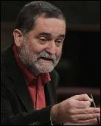

2012-03-01T12:30:00+01:00
El Estado pagará a Otegi 20.000 euros por vulnerar su libertad de expresión
El Estado pagará a Otegi 20.000 euros por vulnerar su libertad de expresión
El pago se hará hoy mismo. Alberto Ruiz-Gallardón acoge "con disgusto" la sentencia del Tribunal de EstrasburgoEn cumplimiento de una sentancia del Tribunal Europeo de Derechos Humanos del pasado mes de marzo, el Estado español indemnizará en las próximas horas a Arnaldo Otegi con 20.000 euros en concepto de daños morales por la "desproporcionada" condena que se le impuso —un año de cárcel— por un delito de injurias al rey.
Imagen de archivo de Otegi. HUMBERTO BILBAO
El pago se hará hoy mismo. Alberto Ruiz-Gallardón acoge "con disgusto" la sentencia del Tribunal de Estrasburgo
En cumplimiento de una sentancia del Tribunal Europeo de Derechos Humanos del pasado mes de marzo, el Estado español indemnizará en las próximas horas a Arnaldo Otegi con 20.000 euros en concepto de daños morales por la "desproporcionada" condena que se le impuso —un año de cárcel— por un delito de injurias al rey.
Continuar leyendo...
2012-03-01T11:58:00+01:00
Davy Jones, líder de 'The Monkees', muere a los 66 años en Florida
Davy Jones, líder de 'The Monkees', muere a los 66 años en Florida
La banda, que dio nombre a una serie del mismo nombre, se hizo famosa por temas tan conocidos como 'I'm a Believer' Davy Jones, quien fuera líder de la banda estadounidense The Monkees, ha muerto a los 66 años en su casa de Florida, a causa de un ataque al corazón.
La banda, que dio nombre a una serie del mismo nombre, se hizo famosa por temas tan conocidos como 'I'm a Believer'
Davy Jones, quien fuera líder de la banda estadounidense The Monkees, ha muerto a los 66 años en su casa de Florida, a causa de un ataque al corazón.
Continuar leyendo...
2012-03-01T10:55:00+01:00
Marc doma a los campeones
Marc doma a los campeones
Lidera, con 22 puntos, la victoria de los Grizzlies sobre los Mavericks. Pau gana a los Timberwolves de Ricky y se acostumbra a la fuerza a la incertidumbre sobre su futuro Tras el parón motivado por el All-Star, la competición en la NBA ha vuelto esta noche de forma muy positiva para casi todos los jugadores españoles. Ganaron los Lakers, los Grizzlies, los Raptors y los Thunder.
El jugador español de los Lakers de Los Ángeles, Pau Gasol, intenta un rebote ante la mirada de Ricky Rubio, de los Timberwolves.EFE
Lidera, con 22 puntos, la victoria de los Grizzlies sobre los Mavericks. Pau gana a los Timberwolves de Ricky y se acostumbra a la fuerza a la incertidumbre sobre su futuro
Tras el parón motivado por el All-Star, la competición en la NBA ha vuelto esta noche de forma muy positiva para casi todos los jugadores españoles. Ganaron los Lakers, los Grizzlies, los Raptors y los Thunder.
Continuar leyendo...
2012-03-01T10:48:00+01:00
Al Asad desoye a la ONU y se prepara para tomar el bastión rebelde de Homs
Al Asad desoye a la ONU y se prepara para tomar el bastión rebelde de Homs
Mientras la ONU condena al régimen, unos 7.000 soldados esperan la orden para entrar en el barrio de Baba Amro "La situación en Siria es cada vez más desesperada. No hay mayor urgencia para la comunidad internacional que poner fin de inmediato a los asesinatos y que el Gobierno detenga el uso de la fuerza contra los civiles". Las palabras del Secretario General de la ONU no llegan a los oídos de Bachar Al Asad: al mismo tiempo que el Consejo de Derechos Humanos de la ONU condenaba la madrugada de este jueves al régimen sirio y le exigía que pusiera fin de inmediato a las violaciones de derechos humanos y a las matanzas de civiles, unos 7.000 soldados del régimen se concentraban en las inmediaciones del barrio de Baba Amro, el bastión opositor de Homs, para tomarlo a sangre y fuego.
Mientras la ONU condena al régimen, unos 7.000 soldados esperan la orden para entrar en el barrio de Baba Amro
"La situación en Siria es cada vez más desesperada. No hay mayor urgencia para la comunidad internacional que poner fin de inmediato a los asesinatos y que el Gobierno detenga el uso de la fuerza contra los civiles". Las palabras del Secretario General de la ONU no llegan a los oídos de Bachar Al Asad: al mismo tiempo que el Consejo de Derechos Humanos de la ONU condenaba la madrugada de este jueves al régimen sirio y le exigía que pusiera fin de inmediato a las violaciones de derechos humanos y a las matanzas de civiles, unos 7.000 soldados del régimen se concentraban en las inmediaciones del barrio de Baba Amro, el bastión opositor de Homs, para tomarlo a sangre y fuego.
Continuar leyendo...
2012-03-01T10:39:00+01:00
El Gobierno sólo aspira a arañar "décimas" al objetivo de la UE
El Gobierno sólo aspira a arañar "décimas" al objetivo de la UE
Margallo asegura que el objetivo prácticamente no se moverá. Toxo no ve "indicios" de que la UE acepte relajar el déficit y critica la "táctica electoral" de RajoyEl ministro de Asuntos Exteriores y de Cooperación, José Manuel García-Margallo, ha reconocido este jueves que "lo más" a lo que puede aspirar España es a que la Comisión Europea acceda a rebajar en "décimas" el objetivo de reducción de déficit fijado para nuestro país este año, que se sitúa actualmente en el 4,4%. El presidente del Gobierno, ayer, no quiso concretar la cifra y se limitó a explicar que que bajará el déficit "todo lo que podamos".
Margallo asegura que el objetivo prácticamente no se moverá. Toxo no ve "indicios" de que la UE acepte relajar el déficit y critica la "táctica electoral" de Rajoy
El ministro de Asuntos Exteriores y de Cooperación, José Manuel García-Margallo, ha reconocido este jueves que "lo más" a lo que puede aspirar España es a que la Comisión Europea acceda a rebajar en "décimas" el objetivo de reducción de déficit fijado para nuestro país este año, que se sitúa actualmente en el 4,4%. El presidente del Gobierno, ayer, no quiso concretar la cifra y se limitó a explicar que que bajará el déficit "todo lo que podamos".
Continuar leyendo...
2012-03-01T09:34:00+01:00
Los estudiantes de Barcelona bloquean los accesos a la universidad
Los estudiantes de Barcelona bloquean los accesos a la universidad
Continúan las protestas contra los recortes en Barcelona. Se suspenden las clases en 5 facultades. Once de los doce detenidos ayer son puestos en libertad Doce detenidos, otros doce heridos y protestas que acabaron en cargas policiales. Son el resultado de las manifestaciones de estudiantes ayer en Barcelona, (ver fotogalería) que hoy salen a las calles de nuevo para demostrar que no van a rendirse tan fácilmente. Las protestas en contra de los recortes en Educación continúan en las principales universidades de Barcelona, donde los estudiantes han mantenido bloqueados los accesos a a la Universidad Autónoma de Barcelona (UAB) durante toda la mañana.
Miles de personas, entre estudiantes, docentes y personal universitario acudieron a las manifestaciones de ayer en Barcelona. EFE
Continúan las protestas contra los recortes en Barcelona. Se suspenden las clases en 5 facultades. Once de los doce detenidos ayer son puestos en libertad
Doce detenidos, otros doce heridos y protestas que acabaron en cargas policiales. Son el resultado de las manifestaciones de estudiantes ayer en Barcelona, (ver fotogalería) que hoy salen a las calles de nuevo para demostrar que no van a rendirse tan fácilmente. Las protestas en contra de los recortes en Educación continúan en las principales universidades de Barcelona, donde los estudiantes han mantenido bloqueados los accesos a a la Universidad Autónoma de Barcelona (UAB) durante toda la mañana.
Continuar leyendo...
2012-02-29T23:26:00+01:00
Iniesta y Silva desatan la magia, Soldado remata
Iniesta y Silva desatan la magia, Soldado remata
La campeona mundial se gusta en un encuentro coronado con un 'hat trick' de Roberto SoldadoLa selección española goleó 5-0 a Venezuela en una exhibición de Andrés Iniesta y David Silva en La Rosaleda, que desataron la magia de un partido que remató Roberto Soldado con un triplete en su regreso, que incrementa aún más el debate del 9 en la última prueba antes de la Eurocopa 2012.
Andrés Iniesta es felicitado por sus compañeros Cesc Fábregas y Jordi Alba tras marcar el primer gol.- Jorge Zapata (EFE)
La campeona mundial se gusta en un encuentro coronado con un 'hat trick' de Roberto Soldado
La selección española goleó 5-0 a Venezuela en una exhibición de Andrés Iniesta y David Silva en La Rosaleda, que desataron la magia de un partido que remató Roberto Soldado con un triplete en su regreso, que incrementa aún más el debate del 9 en la última prueba antes de la Eurocopa 2012.
Continuar leyendo...
2012-02-29T22:28:00+01:00
Los españoles vuelven a las calles contra los recortes
Los españoles vuelven a las calles contra los recortes
Cientos de miles de personas han secundado las manifestaciones convocadas por los sindicatos europeosCientos de miles de personas han protestado hoy en las ciudades españolas, convocados por la Confederación Europea de Sindicatos, contra los recortes sociales impuestos por la Unión Europea.
Cientos de miles de personas han secundado las manifestaciones convocadas por los sindicatos europeos
Cientos de miles de personas han protestado hoy en las ciudades españolas, convocados por la Confederación Europea de Sindicatos, contra los recortes sociales impuestos por la Unión Europea.
Continuar leyendo...
Cayo Lara: si hay huelga general, IU la apoyará "a tope"
Cayo Lara: si hay huelga general, IU la apoyará "a tope"
El coordinador federal de IU cree que la reforma laboral traerá una "enorme sangría" de asalariadosEl coordinador federal de IU, Cayo Lara, ha dicho hoy que apoyará "a tope" la convocatoria de una huelga general contra la reforma laboral y que si se produce, será por la demanda social y porque el PP es incapaz de echar marcha atrás.
El líder de IU, Cayo Lara.- EFE
El coordinador federal de IU cree que la reforma laboral traerá una "enorme sangría" de asalariados
El coordinador federal de IU, Cayo Lara, ha dicho hoy que apoyará "a tope" la convocatoria de una huelga general contra la reforma laboral y que si se produce, será por la demanda social y porque el PP es incapaz de echar marcha atrás.
Continuar leyendo...
2012-02-29T20:52:00+01:00
Este jueves entra en vigor la ley 'Sinde-Wert'
Este jueves entra en vigor la ley 'Sinde-Wert'
La norma tendrá la potestad de cerrar páginas web que violen derechos de autorDesde este jueves entra en vigor el real Decreto que pretende evitar la descarga ilegal de contenidos protegidos por derechos de autor en Internet. Con el gobierno de Mariano Rajoy, los trámites que empezó Ángeles González-Sinde han continuado. El 30 de diciembre de 2011 se aprobó la nueva regulación anti-descargas sin modificación alguna. La ley se hacía realidad así y señalaba el 1 de marzo como fecha de inicio para llevar a cabo el cierre de webs con contenidos que violan los derechos de autor.
El ministro de Educación, Cultura y Deportes, Juan Ignacio Wert. EFE/Ángel Díaz
La norma tendrá la potestad de cerrar páginas web que violen derechos de autor
Desde este jueves entra en vigor el real Decreto que pretende evitar la descarga ilegal de contenidos protegidos por derechos de autor en Internet. Con el gobierno de Mariano Rajoy, los trámites que empezó Ángeles González-Sinde han continuado. El 30 de diciembre de 2011 se aprobó la nueva regulación anti-descargas sin modificación alguna. La ley se hacía realidad así y señalaba el 1 de marzo como fecha de inicio para llevar a cabo el cierre de webs con contenidos que violan los derechos de autor.
Continuar leyendo...
2012-02-29T19:35:00+01:00
La ONU, a favor de permitir el 'hiyab' en el fútbol femenino
La ONU, a favor de permitir el 'hiyab' en el fútbol femenino
Lo hace cuatro días antes de que la International Board, organismo que regula el reglamento, deba pronunciarse a tal respectoLa Organización de Naciones Unidas (ONU) se ha unido a la campaña que persigue la eliminación de la prohibición del uso del 'hiyab' sobre un terreno de juego, cuatro días antes de que la International Board, organismo que regula el reglamento de dicho deporte, deba pronunciarse a tal respecto.
Jugadoras alemana e iraní.
Lo hace cuatro días antes de que la International Board, organismo que regula el reglamento, deba pronunciarse a tal respecto
La Organización de Naciones Unidas (ONU) se ha unido a la campaña que persigue la eliminación de la prohibición del uso del 'hiyab' sobre un terreno de juego, cuatro días antes de que la International Board, organismo que regula el reglamento de dicho deporte, deba pronunciarse a tal respecto.
Continuar leyendo...
2012-02-29T19:14:00+01:00
Juncker pide no dramatizar sobre el desvío en la deuda española
Juncker pide no dramatizar sobre el desvío en la deuda española
El presidente del Eurogrupo culpa a las comunidades autónomas de esta irregularidadEl presidente del Eurogrupo, Jean-Claude Juncker, ha pedido este miércoles "no dramatizar" el incumplimiento por parte de España del objetivo de déficit público en 2011. En un principio, se había prometido a Bruselas no superar el 6% del PIB, cuando se ha situado en un 8,51%.
El primer ministro de Luxemburgo y jefe del Eurogrupo, Jean Claude Juncker.EFE/JULIEN WARNAND
El presidente del Eurogrupo culpa a las comunidades autónomas de esta irregularidad
El presidente del Eurogrupo, Jean-Claude Juncker, ha pedido este miércoles "no dramatizar" el incumplimiento por parte de España del objetivo de déficit público en 2011. En un principio, se había prometido a Bruselas no superar el 6% del PIB, cuando se ha situado en un 8,51%.
Continuar leyendo...
2012-02-29T19:01:00+01:00
Los estudiantes toman Barcelona
Los estudiantes toman Barcelona
2012-02-29T16:09:00+01:00
La prueba del '9'
La prueba del '9'
España se mide a Venezuela en una reválida para Llorente y Soldado esperando la oportunidad desde el banquillo Última prueba de fogueo para La Roja. Hay que aprovechar al máximo las oportunidades de juntar a los internacionales y más teniendo en cuenta las incógnitas que se le plantean a Vicente Del Bosque a cien días del comienzo de la Eurocopa de Polonia y Ucrania.
Soldado y Ramos entrenan en Málaga.REUTERS
España se mide a Venezuela en una reválida para Llorente y Soldado esperando la oportunidad desde el banquillo
Última prueba de fogueo para La Roja. Hay que aprovechar al máximo las oportunidades de juntar a los internacionales y más teniendo en cuenta las incógnitas que se le plantean a Vicente Del Bosque a cien días del comienzo de la Eurocopa de Polonia y Ucrania.
Continuar leyendo...
2012-02-29T14:37:00+01:00
El cáncer de pulmón aumenta en mujeres "porque dejar de fumar engorda"
El cáncer de pulmón aumenta en mujeres "porque dejar de fumar engorda"
"Este año habrá 5.000 nuevas enfermas" aseguran en el Segundo Simposio de Cáncer de Pulmón en Mujeres La incidencia del cáncer de pulmón en mujeres "ha aumentado un 20%" en España en los últimos seis años, según ha explicado la doctora del Hospital Universitario Vall D'Hebron de Barcelona Enriqueta Felip, en la previa del II Simposio de Cáncer de Pulmón en Mujeres de la Asociación para la Investigación del Cáncer de Pulmón en Mujeres (ICAPEM), que se celebra este martes en Madrid.
Marcha de mujeres contra el cáncer.
"Este año habrá 5.000 nuevas enfermas" aseguran en el Segundo Simposio de Cáncer de Pulmón en Mujeres
La incidencia del cáncer de pulmón en mujeres "ha aumentado un 20%" en España en los últimos seis años, según ha explicado la doctora del Hospital Universitario Vall D'Hebron de Barcelona Enriqueta Felip, en la previa del II Simposio de Cáncer de Pulmón en Mujeres de la Asociación para la Investigación del Cáncer de Pulmón en Mujeres (ICAPEM), que se celebra este martes en Madrid.
Continuar leyendo...
2012-02-29T13:46:00+01:00
Detienen a un hombre en Egipto al confundirlo con un líder de Al Qaeda
Detienen a un hombre en Egipto al confundirlo con un líder de Al Qaeda
El detenido tiene el mismo nombre que el líder islamista, Mohamed Ibrahim Makkawi Un islamista egipcio, identificado por error como un alto cargo de Al Qaeda por tener el mismo nombre, fue detenido hoy en el aeropuerto de El Cairo.
El detenido tiene el mismo nombre que el líder islamista, Mohamed Ibrahim Makkawi
Un islamista egipcio, identificado por error como un alto cargo de Al Qaeda por tener el mismo nombre, fue detenido hoy en el aeropuerto de El Cairo.
Continuar leyendo...
2012-02-29T13:48:00+01:00
La doble vara de medir del PP andaluz
La doble vara de medir del PP andaluz
"Con el PP, la austeridad no será una exigencia moral, sino un imperativo legal. Tiene que ser para todo, salvando la educación, porque nos jugamos el empleo del futuro; la sanidad, porque nos jugamos la vida, y las políticas sociales, porque no abandonaremos a nadie”. Esta es una frase rescatada de la hemeroteca, pronunciada por Javier Arenas en junio de 2011, justo después de ganar holgadamente las elecciones municipales y a pocos meses de repetir victoria en las generales del 20N. El presidente del PP andaluz tiene esta vez, a la cuarta, su gran ocasión, alcanzar al fin el Palacio de San Telmo y gobernar en la única Comunidad que se le ha resistido hasta ahora a la derecha.
"Con el PP, la austeridad no será una exigencia moral, sino un imperativo legal. Tiene que ser para todo, salvando la educación, porque nos jugamos el empleo del futuro; la sanidad, porque nos jugamos la vida, y las políticas sociales, porque no abandonaremos a nadie”. Esta es una frase rescatada de la hemeroteca, pronunciada por Javier Arenas en junio de 2011, justo después de ganar holgadamente las elecciones municipales y a pocos meses de repetir victoria en las generales del 20N. El presidente del PP andaluz tiene esta vez, a la cuarta, su gran ocasión, alcanzar al fin el Palacio de San Telmo y gobernar en la única Comunidad que se le ha resistido hasta ahora a la derecha.
Continuar leyendo...
2012-02-29T13:32:00+01:00
"Los autos de Garzón han sido una fuente de inspiración fundamental"
"Los autos de Garzón han sido una fuente de inspiración fundamental"
El periodista José Luis Gordillo presenta su segunda novela, 'Yo te quiero'Es una historia que se lee de un tirón. 'Yo te quiero', la segunda novela del periodista José Luis Gordillo (Bormujos, Sevilla, 1970) es un efectivo cóctel de glam rock, memoria histórica, corrupción urbanística y personajes sedientos de ganas de amar y ser amados. Una aventura honesta como una letra punk, editada por Alhulia, que se adentra por primera vez en el robo de bebés en España. Tras pasar un tiempo en Madrid, trabajando en el Ministerio de Medio Ambiente, Gordillo vive ahora en Sevilla, donde ha conocido de primera mano, en su paso por la Consejería de Obras Públicas, los excesos del ladrillazo andaluz. Con ese bagaje se ha sumergido en el bosque de la literatura para hallar un atajo directo al estómago. Lean, lean.
El periodista José Luis Gordillo presenta su segunda novela, 'Yo te quiero'
Es una historia que se lee de un tirón. 'Yo te quiero', la segunda novela del periodista José Luis Gordillo (Bormujos, Sevilla, 1970) es un efectivo cóctel de glam rock, memoria histórica, corrupción urbanística y personajes sedientos de ganas de amar y ser amados. Una aventura honesta como una letra punk, editada por Alhulia, que se adentra por primera vez en el robo de bebés en España. Tras pasar un tiempo en Madrid, trabajando en el Ministerio de Medio Ambiente, Gordillo vive ahora en Sevilla, donde ha conocido de primera mano, en su paso por la Consejería de Obras Públicas, los excesos del ladrillazo andaluz. Con ese bagaje se ha sumergido en el bosque de la literatura para hallar un atajo directo al estómago. Lean, lean.
Continuar leyendo...
Cultivar cannabis para salvar la crisis
Cultivar cannabis para salvar la crisis
La localidad de Rasquera en Tarragona recibirá 1,3 millones de euros por ceder parcelas para la plantación de esta planta El Ayuntamiento de Rasquera recibirá 1.336.000 euros en dos años por el convenio que prevé firmar con la Asociación Barcelonesa Cannábica de Autoconsumo (ABCDA) para cederle terrenos donde plantar cannabis, y crear así puestos de trabajo y riqueza para el pueblo. El pleno de Rasquera tiene previsto aprobar este miércoles la cesión de terrenos a la ABCDA para plantar cannabis para que esta asociación se pueda abastecer.
La localidad de Rasquera en Tarragona recibirá 1,3 millones de euros por ceder parcelas para la plantación de esta planta.
La localidad de Rasquera en Tarragona recibirá 1,3 millones de euros por ceder parcelas para la plantación de esta planta
El Ayuntamiento de Rasquera recibirá 1.336.000 euros en dos años por el convenio que prevé firmar con la Asociación Barcelonesa Cannábica de Autoconsumo (ABCDA) para cederle terrenos donde plantar cannabis, y crear así puestos de trabajo y riqueza para el pueblo. El pleno de Rasquera tiene previsto aprobar este miércoles la cesión de terrenos a la ABCDA para plantar cannabis para que esta asociación se pueda abastecer.
Continuar leyendo...
2012-02-29T12:58:00+01:00
Barroso exige a Rajoy que cumpla el objetivo de déficit
Barroso exige a Rajoy que cumpla el objetivo de déficit
El presidente de la Comisión recuerda al Gobierno que aún espera conocer los Presupuestos de 2012. "Sólo entonces" se analizará una revisión del objetivoMariano Rajoy ha pasado de decir "cumpliremos el objetivo de déficit" al "haremos lo que podamos". Un cambio de discurso que en Bruselas no gusta demasiado, al menos en apariencia. El presidente de la Comisión Europea, José Manuel Durao Barroso, no varía su postura: este miércoles ha exigido a Rajoy que presente unos Presupuestos que respeten el 4,4% de déficit.
Barroso se dirige a los medios en Bruselas.YVES LOGGHE / AP PHOTO
El presidente de la Comisión recuerda al Gobierno que aún espera conocer los Presupuestos de 2012. "Sólo entonces" se analizará una revisión del objetivo
Mariano Rajoy ha pasado de decir "cumpliremos el objetivo de déficit" al "haremos lo que podamos". Un cambio de discurso que en Bruselas no gusta demasiado, al menos en apariencia. El presidente de la Comisión Europea, José Manuel Durao Barroso, no varía su postura: este miércoles ha exigido a Rajoy que presente unos Presupuestos que respeten el 4,4% de déficit.
Continuar leyendo...
2012-02-29T12:48:00+01:00
Amaiur acusa a Rajoy de inflexible e insta a ETA a dar más pasos
Amaiur acusa a Rajoy de inflexible e insta a ETA a dar más pasos
Iñaki Antigüedad ha pedido que el Estado reconozca también las víctimas de las torturas El portavoz de Amaiur en el Congreso, Iñaki Antigüedad, ha acusado a Mariano Rajoy de no atender a las peticiones de su formación política, especialmente en política penitenciaria. Así, para demostrar que la izquierda abertzale sí está dispuesta al diálogo, ha instado a ETA a dar pasos hacia adelante, haga lo que haga el ejecutivo conservador.

Iñaki Antigüedad.- EUROPA PRESS
Iñaki Antigüedad ha pedido que el Estado reconozca también las víctimas de las torturas
El portavoz de Amaiur en el Congreso, Iñaki Antigüedad, ha acusado a Mariano Rajoy de no atender a las peticiones de su formación política, especialmente en política penitenciaria. Así, para demostrar que la izquierda abertzale sí está dispuesta al diálogo, ha instado a ETA a dar pasos hacia adelante, haga lo que haga el ejecutivo conservador.
Continuar leyendo...
2012-02-29T11:54:00+01:00
Aguirre ve una mano negra tras el embargo del Santa Illa
Aguirre ve una mano negra tras el embargo del Santa Illa
La presidenta de la Comunidad de Madrid exculpa a la Seguridad Social y al Ministerio y apunta a "una persona física"Esperanza Aguirre quiere saber "quién es la persona" que ordenó el embargo de bienes del colegio privado Santa Illa mientras los alumnos daban clase. La presidenta de la Comunidad de Madrid asegura que "se ha visto claramente" que la orden no tuvo "que ver ni con la ministra [de Empleo] ni con la secretaria de Estado", ya que, "en cuanto tuvieron conocimiento, mandaron devolver esos pupitres al colegio".
Momento en el que los muebles regresan al colegio Santa Illa tras anularse el embargo.EFE/Kiko Huesca
La presidenta de la Comunidad de Madrid exculpa a la Seguridad Social y al Ministerio y apunta a "una persona física"
Esperanza Aguirre quiere saber "quién es la persona" que ordenó el embargo de bienes del colegio privado Santa Illa mientras los alumnos daban clase. La presidenta de la Comunidad de Madrid asegura que "se ha visto claramente" que la orden no tuvo "que ver ni con la ministra [de Empleo] ni con la secretaria de Estado", ya que, "en cuanto tuvieron conocimiento, mandaron devolver esos pupitres al colegio".
Continuar leyendo...
2012-02-29T11:18:00+01:00
El 'pájaro' que durmió en un cráter
El 'pájaro' que durmió en un cráter
El parapentista español Horacio Llorens, triple campeón del mundo, tiene que pasar la noche dentro de un volcán activo en Tanzania por una tormenta Lo suyo es volar en parapente. Pasión que ejercita desde los 12 años y que el domingo le llevó a realizar una de las mayores locuras de su vida. El español Horacio Llorens, triple campeón del mundo de parapente acrobático, tuvo que hacer un aterrizaje de emergencia en el cráter de un volcán activo de Tanzania y pasar la noche entre cenizas debido a una tormenta.
El parapentista español Horacio Llorens, triple campeón del mundo, tiene que pasar la noche dentro de un volcán activo en Tanzania por una tormenta
Lo suyo es volar en parapente. Pasión que ejercita desde los 12 años y que el domingo le llevó a realizar una de las mayores locuras de su vida. El español Horacio Llorens, triple campeón del mundo de parapente acrobático, tuvo que hacer un aterrizaje de emergencia en el cráter de un volcán activo de Tanzania y pasar la noche entre cenizas debido a una tormenta.
Continuar leyendo...
2012-02-29T11:13:00+01:00
Grecia afronta una nueva jornada de paros y protestas por los recortes
Grecia afronta una nueva jornada de paros y protestas por los recortes
Los sindicatos mayoritarios vuelven a llamar a los trabajadores a salir a la calle contra el tijeretazo de 3. 200 millones y la reducción del salario mínimo aprobados ayer Ante los nuevos recortes de salarios y pensiones aprobados el martes por el Parlamento, los principales sindicatos y organizaciones políticas griegas vuelven a salir a las calles en una nueva jornada de paros y manifestaciones.
Los trabajadores griegos protestan contra las medidas de austeridad del gobierno tecnocrático.- Aris Messinis (AFP)
Los sindicatos mayoritarios vuelven a llamar a los trabajadores a salir a la calle contra el tijeretazo de 3. 200 millones y la reducción del salario mínimo aprobados ayer
Ante los nuevos recortes de salarios y pensiones aprobados el martes por el Parlamento, los principales sindicatos y organizaciones políticas griegas vuelven a salir a las calles en una nueva jornada de paros y manifestaciones.
Continuar leyendo...
2012-02-29T10:47:00+01:00
La economía española siguió contrayéndose en el arranque de 2012
La economía española siguió contrayéndose en el arranque de 2012
El Banco de España aplaude la reforma laboral pero advierte de que a corto plazo no se creará empleo El Banco de España apunta en su último boletín económico que la actividad de la economía española prolongó "su dinámica contractiva" en el inicio de 2012 según se desprende de los indicadores coyunturales, "todavía escasos". Es decir, que el PIB siguió la senda prevista después de que en el último trimestre de 2011 cayera un 0,3%.
El Banco de España aplaude la reforma laboral pero advierte de que a corto plazo no se creará empleo
El Banco de España apunta en su último boletín económico que la actividad de la economía española prolongó "su dinámica contractiva" en el inicio de 2012 según se desprende de los indicadores coyunturales, "todavía escasos". Es decir, que el PIB siguió la senda prevista después de que en el último trimestre de 2011 cayera un 0,3%.
Continuar leyendo...
2012-02-29T10:04:00+01:00
Aguirre: "¿Nosotros cuándo hemos protestado en la calle?"
Aguirre: "¿Nosotros cuándo hemos protestado en la calle?"
La presidenta de la Comunidad de Madrid tilda a los manifestantes contra los recortes de "agitadores profesionales alentados por el PSOE"El PP niega ahora que se manifestara en la calle contra el Gobierno socialista de José Luis Rodríguez Zapatero. "¿Nosotros cuándo hemos protestado en la calle? Había manifestaciones cuando pactaban con los terroristas, y todas autorizadas, pero no nos hemos dedicado a las algaradas callejeras ni nos dedicaremos nunca", ha dicho la presidenta de la Comunidad de Madrid, Esperanza Aguirre, en declaraciones a Onda Cero.
Esperanza Aguirre, este miércoles, durante un acto en Madrid.EFE
La presidenta de la Comunidad de Madrid tilda a los manifestantes contra los recortes de "agitadores profesionales alentados por el PSOE"
El PP niega ahora que se manifestara en la calle contra el Gobierno socialista de José Luis Rodríguez Zapatero. "¿Nosotros cuándo hemos protestado en la calle? Había manifestaciones cuando pactaban con los terroristas, y todas autorizadas, pero no nos hemos dedicado a las algaradas callejeras ni nos dedicaremos nunca", ha dicho la presidenta de la Comunidad de Madrid, Esperanza Aguirre, en declaraciones a Onda Cero.
Continuar leyendo...
2012-02-29T08:56:00+01:00
Las protestas de los estudiantes en Barcelona acaban en cargas de los Mossos
Las protestas de los estudiantes en Barcelona acaban en cargas de los Mossos
Hay doce detenidos y nueve heridos. La Policía rodea el Congreso Mundial de Móviles ante los cientos de manifestantesLas manifestaciones de estudiantes de este miércoles contra los recortes en Educación por las calles de Barcelona han acabado con cargas policiales y enfrentamientos entre los Mossos y varios de los manifestantes, y se han saldado con un balance de 12 heridos leves y 12 detenidos, entre ellos dos menores de edad. [VER FOTOGALERÍA]
Hay doce detenidos y nueve heridos. La Policía rodea el Congreso Mundial de Móviles ante los cientos de manifestantes Las manifestaciones de estudiantes de este miércoles contra los recortes en Educación por las calles de Barcelona han acabado con cargas policiales y enfrentamientos entre los Mossos y varios de los manifestantes, y se han saldado con un balance de 12 heridos leves y 12 detenidos, entre ellos dos menores de edad. [VER FOTOGALERÍA]
Continuar leyendo...
2012-02-29T09:05:00+01:00
La inflación se estabiliza en febrero
La inflación se estabiliza en febrero
Se pone fin a la racha de descensos que se mantenía desde septiembre. Los precios, en niveles de hace más de dos añosEl Indice de Precios de Consumo mantuvo en febrero su tasa anual en el 2%, la misma tasa que se registró en enero, según el indicador adelantado sobre la evolución de precios en España publicado este miércoles por el Instituto Nacional de Estadística.
Se pone fin a la racha de descensos que se mantenía desde septiembre. Los precios, en niveles de hace más de dos años
El Indice de Precios de Consumo mantuvo en febrero su tasa anual en el 2%, la misma tasa que se registró en enero, según el indicador adelantado sobre la evolución de precios en España publicado este miércoles por el Instituto Nacional de Estadística.
Continuar leyendo...
Aznar se suelta el pelo: "Cada vez que los socialistas gobiernan dejan el país hecho una ruina"
Aznar se suelta el pelo: "Cada vez que los socialistas gobiernan dejan el país hecho una ruina"
El expresidente del Gobierno atribuye la situación actual a la "herencia" de Zapatero para justificar los recortes de RajoyNi una palabra sobre su champú. José María Aznar ha vuelto a la carga, fiel a su discurso de siempre, corriendo un tupido velo sobre las últimas revelaciones de Wikileaks dadas a conocer por Público.El expresidente del Gobierno anda crecido y se ha soltado el pelo. No duda en recurrir a la "herencia complicada" para hallar la causa del "panorama general de recesión económica" y justificar los duros recortes que ha anunciado el Gobierno de Rajoy (y los que vendrán en un futuro). No hizo mención, no obstante, ni una palabra, sobre la gestión de la comunidades autónomas y su contribución al aumento del déficit público. La reforma del sistema financiero y laboral y el recorte de gastos en las administraciones "son reformas de contenido estructural extraordinario" y "muy importantes para el futuro para el país", ha justificado.
El expresidente del Gobierno español José María Aznar. EFE/Pablo Blazquez
El expresidente del Gobierno atribuye la situación actual a la "herencia" de Zapatero para justificar los recortes de Rajoy
Ni una palabra sobre su champú. José María Aznar ha vuelto a la carga, fiel a su discurso de siempre, corriendo un tupido velo sobre las últimas revelaciones de Wikileaks dadas a conocer por Público.
El expresidente del Gobierno anda crecido y se ha soltado el pelo. No duda en recurrir a la "herencia complicada" para hallar la causa del "panorama general de recesión económica" y justificar los duros recortes que ha anunciado el Gobierno de Rajoy (y los que vendrán en un futuro). No hizo mención, no obstante, ni una palabra, sobre la gestión de la comunidades autónomas y su contribución al aumento del déficit público. La reforma del sistema financiero y laboral y el recorte de gastos en las administraciones "son reformas de contenido estructural extraordinario" y "muy importantes para el futuro para el país", ha justificado.
Continuar leyendo...
2012-02-29T07:34:00+01:00
Mitt Romney, más favorito tras ganar en Michigan y Arizona
Mitt Romney, más favorito tras ganar en Michigan y Arizona
Frena el ascenso de Santorum, su principal rival, antes de la múltiple cita electoral del 'Super Martes'Nuevo paso hacia la candidatura para Mitt Romney tras su doble victoria de esta noche en las primarias de Michigan y Arizona. De esta manera, el exgobernador de Massachusetts logra frenar el ascenso de Rick Santorum, que se había convertido en su principal rival a la nominación final.
Frena el ascenso de Santorum, su principal rival, antes de la múltiple cita electoral del 'Super Martes'
Nuevo paso hacia la candidatura para Mitt Romney tras su doble victoria de esta noche en las primarias de Michigan y Arizona. De esta manera, el exgobernador de Massachusetts logra frenar el ascenso de Rick Santorum, que se había convertido en su principal rival a la nominación final.
Continuar leyendo...
Los correos de Stratfor revelan que EEUU tiene preparada una acusación contra Assange
Los correos de Stratfor revelan que EEUU tiene preparada una acusación contra Assange
A la agencia le sorprendió que la Interpol emitiera una orden de arresto por abusos sexuales contra él"Tenemos una acusación sellada contra Assange", reconocía en enero del año pasado el vicepresidente de Stratfor, Fred Burton, en uno de los correos a los que ha tenido acceso Wikileaks y que Público está dando a conocer. De la lectura de los email se deduce que los expertos de la agencia de seguridad no tienen mucho aprecio por Julian Assange, al que llaman en varias ocasiones "gilipollas". Sin embargo, hicieron una copia de todos los cables publicados por Wikileaks y los guardaron en sus servidores para su uso personal.
Julian Assange durante su última rueda de prensa.
A la agencia le sorprendió que la Interpol emitiera una orden de arresto por abusos sexuales contra él
"Tenemos una acusación sellada contra Assange", reconocía en enero del año pasado el vicepresidente de Stratfor, Fred Burton, en uno de los correos a los que ha tenido acceso Wikileaks y que Público está dando a conocer. De la lectura de los email se deduce que los expertos de la agencia de seguridad no tienen mucho aprecio por Julian Assange, al que llaman en varias ocasiones "gilipollas". Sin embargo, hicieron una copia de todos los cables publicados por Wikileaks y los guardaron en sus servidores para su uso personal.
Continuar leyendo...
2012-02-28T21:55:00+01:00
EEUU reconoce que restos de víctimas del 11-S terminaron en un vertedero
EEUU reconoce que restos de víctimas del 11-S terminaron en un vertedero
El Departamento de Defensa norteamericano ha aclarado que no podían ser identificadosEl Departamento de Defensa de Estados Unidos ha recogido en un informe que restos parciales y no identificados de víctimas del 11-S fueron incinerados y arrojados posteriormente a un vertedero de Virginia, lugar donde también terminaron restos de militares no reclamados.
El Departamento de Defensa norteamericano ha aclarado que no podían ser identificados
El Departamento de Defensa de Estados Unidos ha recogido en un informe que restos parciales y no identificados de víctimas del 11-S fueron incinerados y arrojados posteriormente a un vertedero de Virginia, lugar donde también terminaron restos de militares no reclamados.
Continuar leyendo...
Interior desaconseja ahora ilegalizar Amaiur y Bildu
Interior desaconseja ahora ilegalizar Amaiur y Bildu
El ministro de Interior dice que el Gobierno cuenta con informes de la Fiscalía y de la Abogacía General que desaconsejan instar en estos momentos la ilegalización de Bildu y AmaiurEl ministro del Interior, Jorge Fernández Díaz, ha lamentado este martes que se pueda poner "en duda" que el Gobierno está siendo "implacable" hasta conseguir la completa disolución de ETA, aunque ha insistido en que, de momento, no hay base jurídica para pedir la ilegalización de Bildu y Amaiur.
Fernández Díaz, este martes. EFE
El ministro de Interior dice que el Gobierno cuenta con informes de la Fiscalía y de la Abogacía General que desaconsejan instar en estos momentos la ilegalización de Bildu y Amaiur
El ministro del Interior, Jorge Fernández Díaz, ha lamentado este martes que se pueda poner "en duda" que el Gobierno está siendo "implacable" hasta conseguir la completa disolución de ETA, aunque ha insistido en que, de momento, no hay base jurídica para pedir la ilegalización de Bildu y Amaiur.
Continuar leyendo...
2012-02-28T20:45:00+01:00
Los sindicatos alertan de que el Gobierno quiere que parados sustituyan a personal público
Los sindicatos alertan de que el Gobierno quiere que parados sustituyan a personal público
UGT y CCOO advierten de que los desempleados tendrán la obligación de trabajar gratisUGT ha alertado este martes sobre los peligros de una posible sustitución de trabajadores del sector público que hayan sido despedidos por la reforma laboral, por parados que desempeñen tareas sociales.
UGT y CCOO advierten de que los desempleados tendrán la obligación de trabajar gratis
UGT ha alertado este martes sobre los peligros de una posible sustitución de trabajadores del sector público que hayan sido despedidos por la reforma laboral, por parados que desempeñen tareas sociales.
Continuar leyendo...
Chávez, en "buenas condiciones" tras la operación
Chávez, en "buenas condiciones" tras la operación
El presidente venezolano comenzará el tratamiento de recuperación tras haberle extraído por completo una lesión en la pelvisEl presidente de Venezuela, Hugo Chávez, se encuentra en buenas condiciones físicas en Cuba tras una nueva operación en la que se le extrajo completamente una lesión en la zona pélvica, donde ya había sido tratado por un cáncer, según anunció el Gobierno.
Hugo Chávez y su hija, en el avión antes de embarcar rumbo a Cuba para su operación el pasado viernes pasado. AFP
El presidente venezolano comenzará el tratamiento de recuperación tras haberle extraído por completo una lesión en la pelvis
El presidente de Venezuela, Hugo Chávez, se encuentra en buenas condiciones físicas en Cuba tras una nueva operación en la que se le extrajo completamente una lesión en la zona pélvica, donde ya había sido tratado por un cáncer, según anunció el Gobierno.
Continuar leyendo...
2012-02-28T19:19:00+01:00
S&P rebaja la deuda de la Generalitat Valenciana a "bono basura"
S&P rebaja la deuda de la Generalitat Valenciana a "bono basura"
La agencia de calificación adelanta que la comunidad tendrá que recibir ayuda del gobierno centralLa agencia de calificación Standard & Poors (S&P) ha rebajado la deuda a largo y corto plazo de la Generalitat Valenciana desde BBB- a BB, lo que equivale a "bono basura debido a las "incertidumbres sobre el apoyo del Gobierno", según un comunicado de la entidad. Además, mantiene la situación de la deuda en CreditWatch Negativo, que refleja, entre otros factores, la posibilidad de una nueva rebaja de la calificación si el Gobierno central no fuera capaz, a largo plazo, de ayudar a las regiones españolas a corregir sus desequilibrios.
La agencia de calificación adelanta que la comunidad tendrá que recibir ayuda del gobierno central
La agencia de calificación Standard & Poors (S&P) ha rebajado la deuda a largo y corto plazo de la Generalitat Valenciana desde BBB- a BB, lo que equivale a "bono basura debido a las "incertidumbres sobre el apoyo del Gobierno", según un comunicado de la entidad. Además, mantiene la situación de la deuda en CreditWatch Negativo, que refleja, entre otros factores, la posibilidad de una nueva rebaja de la calificación si el Gobierno central no fuera capaz, a largo plazo, de ayudar a las regiones españolas a corregir sus desequilibrios.
Continuar leyendo...
Irlanda acudirá a las urnas para ratificar el tratado europeo
Irlanda acudirá a las urnas para ratificar el tratado europeo
La adhesión de Irlanda al tratado modificaría su Constitución, en cuyo caso el Gobierno está obligado legalmente a celebrar una consulta popular El electorado irlandés acudirá de nuevo a las urnas para ratificar el nuevo tratado de la Unión Europea sobre disciplina presupuestaria, después de emitir en el pasado sonoros "noes" y paralizar la aplicación de otros acuerdos comunitarios. El primer ministro irlandés, Enda Kenny, anunció hoy ante el Parlamento que convocará un referéndum, después de que la Fiscalía General del Estado haya concluido que la adhesión de Irlanda al tratado modificaría su Constitución, en cuyo caso el Gobierno está obligado legalmente a celebrar una consulta popular.
La adhesión de Irlanda al tratado modificaría su Constitución, en cuyo caso el Gobierno está obligado legalmente a celebrar una consulta popular
El electorado irlandés acudirá de nuevo a las urnas para ratificar el nuevo tratado de la Unión Europea sobre disciplina presupuestaria, después de emitir en el pasado sonoros "noes" y paralizar la aplicación de otros acuerdos comunitarios. El primer ministro irlandés, Enda Kenny, anunció hoy ante el Parlamento que convocará un referéndum, después de que la Fiscalía General del Estado haya concluido que la adhesión de Irlanda al tratado modificaría su Constitución, en cuyo caso el Gobierno está obligado legalmente a celebrar una consulta popular.
Continuar leyendo...
2012-02-28T17:07:00+01:00
Twitter también juzga a Urdangarin
Twitter también juzga a Urdangarin
El duque figura en más del 96% de los tuits sobre el caso y un 18% de los comentarios paralelos hacen referencia a la República Iñaki Urdangarin no sólo se ha convertido en el protagonista judicial del mes, sino que también ha copado gran parte de los mensajes en Twitter.
Iñaki Urdangarin junto a su abogado llega a los juzgados de Palma.AFP
El duque figura en más del 96% de los tuits sobre el caso y un 18% de los comentarios paralelos hacen referencia a la República
Iñaki Urdangarin no sólo se ha convertido en el protagonista judicial del mes, sino que también ha copado gran parte de los mensajes en Twitter.
Continuar leyendo...
2012-02-28T17:43:00+01:00
Desmantelado un albergue clandestino con 120 perros en Murcia
Desmantelado un albergue clandestino con 120 perros en Murcia
Los perros se hacinaban en poco más de mil metros cuadrados sin agua ni comida, compartiendo espacio con algunos cadáveres de animales La Guardia Civil de la Región de Murcia, en colaboración con personal del Servicio de Sanidad Animal de la Dirección General de Ganadería de la Comunidad Autónoma de la Región de Murcia, ha desmantelado, en la denominada operación 'REHALA', un albergue ilegal de perros en el término municipal de Bullas (Murcia). En las instalaciones, un terreno cercado de poco más de 1.000 metros cuadrados situado en una zona rural, se alojaban alrededor de 120 perros de diferentes edades y razas, en su mayoría correspondientes a las variedades que con frecuencia se emplean para el ejercicio de la caza como son galgos, podencos, pachones y bretones, entre otros.
Desmantelado un albergue clandestino con 120 perros en Murcia. EP
Los perros se hacinaban en poco más de mil metros cuadrados sin agua ni comida, compartiendo espacio con algunos cadáveres de animales
La Guardia Civil de la Región de Murcia, en colaboración con personal del Servicio de Sanidad Animal de la Dirección General de Ganadería de la Comunidad Autónoma de la Región de Murcia, ha desmantelado, en la denominada operación 'REHALA', un albergue ilegal de perros en el término municipal de Bullas (Murcia). En las instalaciones, un terreno cercado de poco más de 1.000 metros cuadrados situado en una zona rural, se alojaban alrededor de 120 perros de diferentes edades y razas, en su mayoría correspondientes a las variedades que con frecuencia se emplean para el ejercicio de la caza como son galgos, podencos, pachones y bretones, entre otros.
Continuar leyendo...
2012-02-28T16:08:00+01:00
El fotógrafo británico Paul Conroy logra salir de Siria
El fotógrafo británico Paul Conroy logra salir de Siria
Según 'The Times', en la misma operación de rescate estaban incluídos otros tres periodistas, entre ellos el español Javier Espinosa, pero finalmente tuvieron que retroceder La posible salida de varios periodistas europeos atrapados en la ciudad siria de Homs está provocando contradicciones entre las diferentes fuentes, que no pueden confirmar la seguridad de todos ellos, en parte para no poner en riesgo el rescate de quienes siguen amenazados por los bombardeos.
Imagen de un vídeo amateur del fotógrafo británico Paul Conroy. -AP
Según 'The Times', en la misma operación de rescate estaban incluídos otros tres periodistas, entre ellos el español Javier Espinosa, pero finalmente tuvieron que retroceder
La posible salida de varios periodistas europeos atrapados en la ciudad siria de Homs está provocando contradicciones entre las diferentes fuentes, que no pueden confirmar la seguridad de todos ellos, en parte para no poner en riesgo el rescate de quienes siguen amenazados por los bombardeos.
Continuar leyendo...
2012-02-28T15:56:00+01:00
El Eurogrupo discutirá este jueves una "solución" para España
El Eurogrupo discutirá este jueves una "solución" para España
Juncker avanza que analizarán el desvío del déficit anunciado ayer por MontoroLa Comisión Europea volverá a examinar este jueves con lupa el déficit de España, después de que Montoro cifrara ayer en un 8,51% el déficit de 2011, para lo cual el Eurogrupo ha anunciado una "solución".
Juncker, con Merkel, hace unos días. AFP
Juncker avanza que analizarán el desvío del déficit anunciado ayer por Montoro
La Comisión Europea volverá a examinar este jueves con lupa el déficit de España, después de que Montoro cifrara ayer en un 8,51% el déficit de 2011, para lo cual el Eurogrupo ha anunciado una "solución".
Continuar leyendo...
2012-02-28T14:56:00+01:00
Siria estrena Constitución entre críticas internacionales y represión
Siria estrena Constitución entre críticas internacionales y represión
Con una participación del 57% de los sirios, se aprueba la nueva carta magna. Mientras, la ONU pide llevar al régimen de Asad ante la Corte Penal Internacional Bachar al Asad ha emitido hoy el decreto por el que entra en vigor la nueva Constitución, aprobada el pasado domingo. Sin embargo, el estreno de esta carta magna se da en mitad de una guerra civil que asola el país y mientras parte de la comunidad internacional sigue aumentado su presión para que pare la represión del régimen.
Un miliciano del Ejécito Libre Sirio en una ofensiva.- Rodrigo Abd (AP)
Con una participación del 57% de los sirios, se aprueba la nueva carta magna. Mientras, la ONU pide llevar al régimen de Asad ante la Corte Penal Internacional
Bachar al Asad ha emitido hoy el decreto por el que entra en vigor la nueva Constitución, aprobada el pasado domingo. Sin embargo, el estreno de esta carta magna se da en mitad de una guerra civil que asola el país y mientras parte de la comunidad internacional sigue aumentado su presión para que pare la represión del régimen.
Continuar leyendo...
2012-02-28T14:10:00+01:00
Bruselas ve la reforma laboral insuficiente para crear empleo
Bruselas ve la reforma laboral insuficiente para crear empleo
El comisario Andor pide a Rajoy que invierta en educación, potencie las políticas sociales y ataque la economía sumergida La Comisión Europea comienza a dar recetas al Gobierno de Rajoy, que se encuentran alejadas de las políticas que está llevando a cabo.
El comisario Andor pide a Rajoy que invierta en educación, potencie las políticas sociales y ataque la economía sumergida
La Comisión Europea comienza a dar recetas al Gobierno de Rajoy, que se encuentran alejadas de las políticas que está llevando a cabo.
Continuar leyendo...
2012-02-28T12:45:00+01:00
Se acercan las aventuras de John Carter
Se acercan las aventuras de John Carter
Disney saca a la luz un macroclip sobre su nueva superproducción en el que el protagonista lucha contra dos monos blancos gigantes
Disney saca a la luz un macroclip sobre su nueva superproducción en el que el protagonista lucha contra dos monos blancos gigantes
Continuar leyendo...
2012-02-28T13:17:00+01:00
La 'ducha' de cerveza de Merkel
La 'ducha' de cerveza de Merkel
Un camarero volcó varias copas de cerveza sobre la nuca de la canciller alemana durante una celebraciónCada vez que la canciller alemana, Angela Merkel, acude a una celebración, es un indudable foco de atención. Lo que no esperaba el pasado miércoles era serlo por terminar bañada, literalmente, en cerveza.
Un camarero volcó varias copas de cerveza sobre la nuca de la canciller alemana durante una celebración
Cada vez que la canciller alemana, Angela Merkel, acude a una celebración, es un indudable foco de atención. Lo que no esperaba el pasado miércoles era serlo por terminar bañada, literalmente, en cerveza.
Continuar leyendo...
28-F con elecciones al fondo
28-F con elecciones al fondo
Arenas y Montoro cargan contra Griñán por el déficit en el acto institucional del Día de Andalucía Con las elecciones autonómicas a menos de un mes y el campo político plagado de incógnitas y controversias, Andalucía celebra hoy su autonomía. El Parlamento ha acogido el principal acto institucional del 28-F, el izado de bandera, con la presencia de todos los que, desde ahora al 25 de marzo, se juegan el poder en la comunidad. Mantener el tono de neutralidad institucional del acto, que se supone alejado de la refriega partidista, era hoy más difícil que nunca. Y así lo han demostrado los hechos.
El presidente de Andalucía, José Antonio Griñán (i), con el ministro de Hacienda, Cristóbal Montoro (c), y el presidente del PP de Andalucía, Javier Arenas (d).-JOSE MANUEL VIDAL (EFE)
Arenas y Montoro cargan contra Griñán por el déficit en el acto institucional del Día de Andalucía
Con las elecciones autonómicas a menos de un mes y el campo político plagado de incógnitas y controversias, Andalucía celebra hoy su autonomía. El Parlamento ha acogido el principal acto institucional del 28-F, el izado de bandera, con la presencia de todos los que, desde ahora al 25 de marzo, se juegan el poder en la comunidad. Mantener el tono de neutralidad institucional del acto, que se supone alejado de la refriega partidista, era hoy más difícil que nunca. Y así lo han demostrado los hechos.
Continuar leyendo...
2012-02-28T12:27:00+01:00
El soldado Bradley Manning, nominado al Nobel de la Paz
El soldado Bradley Manning, nominado al Nobel de la Paz
Comparte candidatura con la exprimera ministra de Ucrania, Yulia Tymoshenko, el expresidente de EEUU, Bill Clinton, y el fundador de Microsoft, Bill GatesEl soldado Bradley Manning, detenido y acusado por Estados Unidos de filtrar decenas de miles de archivos clasificados a Wikileaks, está entre los 231 nominados al Premio Nobel de la Paz.
El soldado Manning en una fotografía de archivo. -AP
Comparte candidatura con la exprimera ministra de Ucrania, Yulia Tymoshenko, el expresidente de EEUU, Bill Clinton, y el fundador de Microsoft, Bill Gates
El soldado Bradley Manning, detenido y acusado por Estados Unidos de filtrar decenas de miles de archivos clasificados a Wikileaks, está entre los 231 nominados al Premio Nobel de la Paz.
Continuar leyendo...
2012-02-28T12:32:00+01:00
Dos detenidos en Barcelona en una protesta de estudiantes
Dos detenidos en Barcelona en una protesta de estudiantes
La concentración era el preludio de la huelga de institutos y universidades convocada para mañana en Catalunya, País Valencià y Balears en contra de los recortesSiguiendo con la ola de protestas contra los recortes en Educación, los estudiantes de Barcelona han salido a la calle con la misma reivindicación.
Los estudiantes protestan frente a la Conselleria de Economía- @SEPC_nacional
La concentración era el preludio de la huelga de institutos y universidades convocada para mañana en Catalunya, País Valencià y Balears en contra de los recortes
Siguiendo con la ola de protestas contra los recortes en Educación, los estudiantes de Barcelona han salido a la calle con la misma reivindicación.
Continuar leyendo...
2012-02-28T11:19:00+01:00
La Roja mira al cielo
La Roja mira al cielo
La selección española estrenará mañana ante Venezuela la segunda equipación que lucirá en la Eurocopa, que será azul clara La selección española de fútbol aprovechará el amistoso de mañana ante Venezuela en La Rosaleda de Málaga para presentar en sociedad la segunda equipación que lucirá en la próxima Eurocopa de Ucrania y Polonia 2012. Todo sea por el merchandising.
La selección española estrenará mañana ante Venezuela la segunda equipación que lucirá en la Eurocopa, que será azul clara
La selección española de fútbol aprovechará el amistoso de mañana ante Venezuela en La Rosaleda de Málaga para presentar en sociedad la segunda equipación que lucirá en la próxima Eurocopa de Ucrania y Polonia 2012. Todo sea por el merchandising.
Continuar leyendo...
2012-02-28T11:03:00+01:00
La Policía Nacional detiene a cuatro supuestos miembros de Anonymous
La Policía Nacional detiene a cuatro supuestos miembros de Anonymous
Están acusados de delitos de asociación ilícita, daños informáticos y descubrimiento y revelación de secretos Varios meses después de haber detenido a la supuesta "cúpula" operativa de Anonymous, el Cuerpo Nacional de Policía ha vuelto a detener a otros cuatro supuestos miembros del grupo. Así lo han anunciado en un comunicado, en el que tachan a los detenidos de "importantes ciberdelincuentes que reivindicaban sus acciones en nombre de Anonymous".
Están acusados de delitos de asociación ilícita, daños informáticos y descubrimiento y revelación de secretos
Varios meses después de haber detenido a la supuesta "cúpula" operativa de Anonymous, el Cuerpo Nacional de Policía ha vuelto a detener a otros cuatro supuestos miembros del grupo. Así lo han anunciado en un comunicado, en el que tachan a los detenidos de "importantes ciberdelincuentes que reivindicaban sus acciones en nombre de Anonymous".
Continuar leyendo...
2012-03-01T12:21:00+01:00
Reino Unido cierra su embajada en Damasco
Reino Unido cierra su embajada en Damasco
El ministro Hague confirma que todo el personal diplomático regresará en pocos días Ante la insostenible situación en Siria y el "deterioro de la seguridad", el Gobierno del Reino Unido ha decidido cerrar su embajada en Damasco y ha retirado a su personal diplomático, ha informado este jueves el ministro británico de Exteriores, William Hague.
Un funeral de un fallecido durante los bombardeos de Asad en Qusayr, a 15 kilómetros de Homs.AFP
El ministro Hague confirma que todo el personal diplomático regresará en pocos días
Ante la insostenible situación en Siria y el "deterioro de la seguridad", el Gobierno del Reino Unido ha decidido cerrar su embajada en Damasco y ha retirado a su personal diplomático, ha informado este jueves el ministro británico de Exteriores, William Hague.
Continuar leyendo...
2012-03-01T12:14:00+01:00
El paro alcanza nuevos máximos en la UE y la Eurozona
El paro alcanza nuevos máximos en la UE y la Eurozona
El desempleo subió en enero hasta el 10,7% en los países del euro y el 10,1% en los Veintisiete, con España a la cabeza (23,3 %) El paro continuó su escalada en enero en la zona del euro y en toda la UE, donde alcanzó los niveles más altos registrados desde octubre de 1997 y desde el año 2000, respectivamente, según los datos difundidos hoy por Eurostat.
Una oficina de empleo, en Madrid. FERNANDO SANCHEZ
El desempleo subió en enero hasta el 10,7% en los países del euro y el 10,1% en los Veintisiete, con España a la cabeza (23,3 %)
El paro continuó su escalada en enero en la zona del euro y en toda la UE, donde alcanzó los niveles más altos registrados desde octubre de 1997 y desde el año 2000, respectivamente, según los datos difundidos hoy por Eurostat.
Continuar leyendo...
2012-03-01T11:01:00+01:00
"Lo más duro fue cuando se quemaron los generadores"
"Lo más duro fue cuando se quemaron los generadores"
Los pasajeros del 'Costa Allegra' ya están en tierra firme después de tres días a la deriva.El buque 'Costa Allegra' con más de 1.000 personas a bordo ha llegado este jueves a la capital de las Seychelles. Después de pasar tres días en el mar sin electricidad y a la deriva, los pasajeros han relatado a su llegada el miedo que han pasado. "Los más duro fue cuando se quemaron los generadores", ha relatado una española a su llegada a tierra.
Pasajeros del 'Costa Allegra', ya en tierra.- AP
Los pasajeros del 'Costa Allegra' ya están en tierra firme después de tres días a la deriva.
El buque 'Costa Allegra' con más de 1.000 personas a bordo ha llegado este jueves a la capital de las Seychelles. Después de pasar tres días en el mar sin electricidad y a la deriva, los pasajeros han relatado a su llegada el miedo que han pasado. "Los más duro fue cuando se quemaron los generadores", ha relatado una española a su llegada a tierra.
Continuar leyendo...
2012-03-01T10:19:00+01:00
RTVE plantea el cierre de Clan y Teledeporte
RTVE plantea el cierre de Clan y Teledeporte
El presidente de turno de la corporación alerta de la caída drástica de audiencia que provocará los recortes El tsunami de recortes que RTVE debe acometer durante 2012 puede arrasar con otros emblemas de la casa como son los canales de TDT Clan y Teledeporte y el longevo concurso 'Saber y ganar'.
El presidente de turno de la corporación alerta de la caída drástica de audiencia que provocará los recortes
El tsunami de recortes que RTVE debe acometer durante 2012 puede arrasar con otros emblemas de la casa como son los canales de TDT Clan y Teledeporte y el longevo concurso 'Saber y ganar'.
Continuar leyendo...
2012-03-01T09:57:00+01:00
La movilización del 29-F despierta la 'Primavera Estudiantil'
La movilización del 29-F despierta la 'Primavera Estudiantil'
Más de 200 estudiantes acudieron anoche a un encierro en la facultad de Filosofía y Letras de la Universidad Complutense de Madrid para decidir el rumbo del movimiento Ayer miles de estudiantes tomaron las calles de gran parte de las ciudades españolas para protestar contra los recortes en Educación y las reformas universitarias. Siguiendo la corriente de las movilizaciones en Valencia, esta 'Primavera Estudiantil', como se ha denominado en las redes sociales, fue especialmente notoria en el País Valencià y Catalunya, donde la jornada se saldó con fuertes enfrentamientos entre los Mossos y los jóvenes en Barcelona y doce detenidos.
Los estudiantes en asamblea en la facultad de Filosofía de la Complutense.
Más de 200 estudiantes acudieron anoche a un encierro en la facultad de Filosofía y Letras de la Universidad Complutense de Madrid para decidir el rumbo del movimiento
Ayer miles de estudiantes tomaron las calles de gran parte de las ciudades españolas para protestar contra los recortes en Educación y las reformas universitarias. Siguiendo la corriente de las movilizaciones en Valencia, esta 'Primavera Estudiantil', como se ha denominado en las redes sociales, fue especialmente notoria en el País Valencià y Catalunya, donde la jornada se saldó con fuertes enfrentamientos entre los Mossos y los jóvenes en Barcelona y doce detenidos.
Continuar leyendo...
2012-03-01T12:06:00+01:00
El Tesoro coloca 4.501 millones en bonos al menor interés desde 2010
El Tesoro coloca 4.501 millones en bonos al menor interés desde 2010
La demanda casi ha triplicado la oferta en bonos a tres y cinco años. En lo que va de año ya ha emitido más de 35.500 millones El Tesoro Público ha colocado este jueves 4.501 millones de euros en bonos a tres y cinco años y ha rebajado su rentabilidad al nivel más bajo desde mediados de 2010, según los datos de mercado.
La demanda casi ha triplicado la oferta en bonos a tres y cinco años. En lo que va de año ya ha emitido más de 35.500 millones
El Tesoro Público ha colocado este jueves 4.501 millones de euros en bonos a tres y cinco años y ha rebajado su rentabilidad al nivel más bajo desde mediados de 2010, según los datos de mercado.
Continuar leyendo...
2012-02-29T22:48:00+01:00
'Hat-trick' de Messi en la victoria de Argentina
'Hat-trick' de Messi en la victoria de Argentina
La albiceleste vence a Suiza en un amistoso con tres goles del astro del BarçaLa selección de Argentina se ha impuesto a la de Suiza en un amistoso disputado este miércoles en Berna donde el barcelonista Leo Messi logró un 'hat-trick'.
Messi celebra uno de los goles. EFE
La albiceleste vence a Suiza en un amistoso con tres goles del astro del Barça
La selección de Argentina se ha impuesto a la de Suiza en un amistoso disputado este miércoles en Berna donde el barcelonista Leo Messi logró un 'hat-trick'.
Continuar leyendo...
2012-02-29T22:16:00+01:00
Rumbo a la segunda vuelta electoral en Senegal
Rumbo a la segunda vuelta electoral en Senegal
Según apuntan los resultados oficiosos, Macky Sall se enfrentaría a Abdoulaye Wade en una segunda vuelta electoralA pesar de que el presidente de Senegal, Abdoulaye Wade, se resistía a admitir la evidencia tras su batacazo en los comicios del pasado 26 de febrero, hoy se han presentado los primeros resultados oficiosos que confirman la necesidad de una segunda vuelta electoral. A expensas de la validación por parte del Tribunal Constitucional que se hará efectiva el viernes, el actual presidente cuenta con un 34,82% de los votos seguido de Macky Sall con un 26,57% y de Mostapha Niasse con un 13,20%.
El candidato opositor senegalés Macky Sall, líder de la Alianza para la República. EFE/NIC BOTHMA
Según apuntan los resultados oficiosos, Macky Sall se enfrentaría a Abdoulaye Wade en una segunda vuelta electoral
A pesar de que el presidente de Senegal, Abdoulaye Wade, se resistía a admitir la evidencia tras su batacazo en los comicios del pasado 26 de febrero, hoy se han presentado los primeros resultados oficiosos que confirman la necesidad de una segunda vuelta electoral. A expensas de la validación por parte del Tribunal Constitucional que se hará efectiva el viernes, el actual presidente cuenta con un 34,82% de los votos seguido de Macky Sall con un 26,57% y de Mostapha Niasse con un 13,20%.
Continuar leyendo...
2012-02-29T21:19:00+01:00
Astrónomos europeos 'redescubren' la existencia de vida en la Tierra
Astrónomos europeos 'redescubren' la existencia de vida en la Tierra
La técnica utilizada hará más fácil descubrir vida en planetas más allá de nuestro Sistema SolarUn equipo de astrónomos europeos ha encontrado evidencia de vida en la Tierra. Parece una confirmación inútil, pero no lo es. Lo novedoso del hallazgo es que lo han hecho a partir del estudio del brillo lunar, es decir, han investigado nuestro planeta como si no se encontraran dentro de él. La técnica aplicada hará más fácil esclarecer si existe vida en exoplanetas, es decir, en planetas más allá de nuestro Sistema Solar.
La técnica utilizada hará más fácil descubrir vida en planetas más allá de nuestro Sistema Solar
Un equipo de astrónomos europeos ha encontrado evidencia de vida en la Tierra. Parece una confirmación inútil, pero no lo es. Lo novedoso del hallazgo es que lo han hecho a partir del estudio del brillo lunar, es decir, han investigado nuestro planeta como si no se encontraran dentro de él. La técnica aplicada hará más fácil esclarecer si existe vida en exoplanetas, es decir, en planetas más allá de nuestro Sistema Solar.
Continuar leyendo...
Un mordisco de 57.000 newtons
Un mordisco de 57.000 newtons
El Tiranosaurio rex poseía el mordisco más potente de todos los tiemposDe entre todos los animales que han caminado alguna vez sobre la Tierra, el tiranosaurio rex es el que ha dado el mordisco más potente, según un estudio que publica hoy la revista de la Royal Society británica Biology Letters.
El Tiranosaurio rex poseía el mordisco más potente de todos los tiempos
De entre todos los animales que han caminado alguna vez sobre la Tierra, el tiranosaurio rex es el que ha dado el mordisco más potente, según un estudio que publica hoy la revista de la Royal Society británica Biology Letters.
Continuar leyendo...
El periodista español Javier Espinosa sale de Siria
El periodista español Javier Espinosa sale de Siria
El reportero de 'El Mundo' se encuentra a salvo en Líbano. El Ejército de Bashar al Asad lanza su ofensiva contra la ciudad de HomsEl periodista español del diario El Mundo Javier Espinosa se encuentra ya a salvo en Líbano después de haber logrado salir de la ciudad siria de Homs, según ha confirmado su mujer, la también periodista Mónica G. Prieto, en un mensaje en la red social Twitter.
Fotografía de archivo de 2005 del periodista del diario 'El Mundo' Javier Espinosa. -EFE
El reportero de 'El Mundo' se encuentra a salvo en Líbano. El Ejército de Bashar al Asad lanza su ofensiva contra la ciudad de Homs
El periodista español del diario El Mundo Javier Espinosa se encuentra ya a salvo en Líbano después de haber logrado salir de la ciudad siria de Homs, según ha confirmado su mujer, la también periodista Mónica G. Prieto, en un mensaje en la red social Twitter.
Continuar leyendo...
2012-02-29T19:04:00+01:00
Pyongyang paraliza su programa nuclear a cambio de alimentos
Pyongyang paraliza su programa nuclear a cambio de alimentos
EEUU se compromete a enviar 240.000 toneladas de ayuda alimentaria en respuesta a la moratoriaEl régimen comunista de Corea del Norte anunció hoy que ha aceptado suspender temporalmente sus actividades de enriquecimiento de uranio, así como las pruebas nucleares y los lanzamientos de misiles de largo alcance. La moratoria, como parte de un acuerdo con EEUU que le permitirá recibir 240.000 toneladas de ayuda alimentaria, ha sido confirmada por Washington.
EEUU se compromete a enviar 240.000 toneladas de ayuda alimentaria en respuesta a la moratoria
El régimen comunista de Corea del Norte anunció hoy que ha aceptado suspender temporalmente sus actividades de enriquecimiento de uranio, así como las pruebas nucleares y los lanzamientos de misiles de largo alcance. La moratoria, como parte de un acuerdo con EEUU que le permitirá recibir 240.000 toneladas de ayuda alimentaria, ha sido confirmada por Washington.
Continuar leyendo...
James Murdoch dimite como presidente de 'News International'
James Murdoch dimite como presidente de 'News International'
El hijo del magnate Rupert Murdoch empezará a trabajar como subdirector de 'News Corporation'.James Murdoch ha dimitido hoy como presidente ejecutivo de News International (NI). El hijo del magnate Rupert Murdoch empezará a dedicarse a otros negocios en News Corporation, la filial estadounidense.
James Murdoch, hijo del magnate Rupert Murdoch, en Londres, Reino Unido. EFE/ARCHIVO/FACUNDO ARRIZABALAGA
El hijo del magnate Rupert Murdoch empezará a trabajar como subdirector de 'News Corporation'.
James Murdoch ha dimitido hoy como presidente ejecutivo de News International (NI). El hijo del magnate Rupert Murdoch empezará a dedicarse a otros negocios en News Corporation, la filial estadounidense.
Continuar leyendo...
2012-02-29T15:59:00+01:00
Detenidos cuatro trabajadores de una granja que maltraban cerdos
Detenidos cuatro trabajadores de una granja que maltraban cerdos
Uno de sus compañeros denunció ante Igualdad Animal las vejaciones que se producían en la explotación porcina localizada en Murcia
Uno de sus compañeros denunció ante Igualdad Animal las vejaciones que se producían en la explotación porcina localizada en Murcia
Continuar leyendo...
2012-02-29T14:46:00+01:00
Un semanario francés denuncia que Ikea espía a empleados y clientes
Un semanario francés denuncia que Ikea espía a empleados y clientes
'Le Canard enchainé' asegura que la filial francesa de la cadena de muebles tenía acceso a un gran fichero policialLa filial francesa del grupo sueco Ikea ha sido denunciada por espiar a sus empleados y clientes, según revela este miércoles el semanario Le Canard Enchaîné, que asegura que la empresa tenía acceso a un gran fichero policial.
Interior de una tienda de Ikea en España.NACHO GALLEGO / EFE
'Le Canard enchainé' asegura que la filial francesa de la cadena de muebles tenía acceso a un gran fichero policial
La filial francesa del grupo sueco Ikea ha sido denunciada por espiar a sus empleados y clientes, según revela este miércoles el semanario Le Canard Enchaîné, que asegura que la empresa tenía acceso a un gran fichero policial.
Continuar leyendo...
2012-02-29T13:21:00+01:00
Anticorrupción rechaza que se impute a la infanta Cristina
Anticorrupción rechaza que se impute a la infanta Cristina
Rechaza la petición de Manos Limpias al no ver indicios suficientes de que la esposa de Urdangarin conociera las actividades investigadas en la trama Nóos La Fiscalía Anticorrupción se opone a que el instructor del caso Nóos, el juez José Castro, cite a declarar como imputada a la infanta Cristina y pedirá al magistrado que rechace el encausamiento de la hija del rey.
La infanta Cristina e Iñaki Urdangarin.EFE
Rechaza la petición de Manos Limpias al no ver indicios suficientes de que la esposa de Urdangarin conociera las actividades investigadas en la trama Nóos
La Fiscalía Anticorrupción se opone a que el instructor del caso Nóos, el juez José Castro, cite a declarar como imputada a la infanta Cristina y pedirá al magistrado que rechace el encausamiento de la hija del rey.
Continuar leyendo...
2012-02-29T12:50:00+01:00
Méndez niega tener un Rólex y haber estado en el Hotel Villa Magna
Méndez niega tener un Rólex y haber estado en el Hotel Villa Magna
El líder de UGT niega a El Intermedio las acusaciones vertidas por la prensa de derechasEl programa de LaSexta El Intermedio, entrevistó ayer martes al secretario general de UGT, Cándido Méndez, que aprovechó el encuentro con la periodista Thais Villas para desmentir algunas informaciones vertidas sobre su persona y sobre los sindicatos.
El líder de UGT niega a El Intermedio las acusaciones vertidas por la prensa de derechas
El programa de LaSexta El Intermedio, entrevistó ayer martes al secretario general de UGT, Cándido Méndez, que aprovechó el encuentro con la periodista Thais Villas para desmentir algunas informaciones vertidas sobre su persona y sobre los sindicatos.
Continuar leyendo...
Un hombre se sube a una grúa para evitar un embargo
Un hombre se sube a una grúa para evitar un embargo
El suceso se produce en Barcelona. El Ayuntamiento le ha embargado sus cuentas tras varias deudas. Un hombre se ha subido a una grúa de unos 20 metros de altura en Barcelona, en un parque próximo a la zona de carga de los camiones que trabajan en las obras de la Sagrada Familia al conocer el embargo de varias de sus cuentas por parte del Ayuntamiento. En un primer momento se pensó que Pedro, de 49 años y trabajador en el sector de la construcción, había tomado esa medida para evitar su desahucio, según informaron fuentes de prensa del monumento, que declararon que el hombre estaba pidiendo hablar con alguien de Catalunya Caixa.
El suceso se produce en Barcelona. El Ayuntamiento le ha embargado sus cuentas tras varias deudas.
Un hombre se ha subido a una grúa de unos 20 metros de altura en Barcelona, en un parque próximo a la zona de carga de los camiones que trabajan en las obras de la Sagrada Familia al conocer el embargo de varias de sus cuentas por parte del Ayuntamiento. En un primer momento se pensó que Pedro, de 49 años y trabajador en el sector de la construcción, había tomado esa medida para evitar su desahucio, según informaron fuentes de prensa del monumento, que declararon que el hombre estaba pidiendo hablar con alguien de Catalunya Caixa.
Continuar leyendo...
2012-02-29T12:50:00+01:00
Fernando Savater, premio Primavera por 'Los invitados de la princesa'
Fernando Savater, premio Primavera por 'Los invitados de la princesa'
El filósofo y escritor es galardonado por su novela de mirada irónica sobre la cultura y los usos socialesEl filósofo y escritor Fernando Savater ha sido galardonado con el Premio Primavera de Novela por 'Los invitados de la princesa', una concatenación de relatos escritos al estilo de Chaucer o de Boccaccio en los que proyecta una mirada irónica y desenfadada sobre la cultura y los usos sociales actuales.
El Filósofo Fernando Savater. EUROPA PRESS
El filósofo y escritor es galardonado por su novela de mirada irónica sobre la cultura y los usos sociales
El filósofo y escritor Fernando Savater ha sido galardonado con el Premio Primavera de Novela por 'Los invitados de la princesa', una concatenación de relatos escritos al estilo de Chaucer o de Boccaccio en los que proyecta una mirada irónica y desenfadada sobre la cultura y los usos sociales actuales.
Continuar leyendo...
2012-02-29T12:47:00+01:00
«Andalucía es un núcleo líder en las renovables y hay que explotarlo mucho más»
«Andalucía es un núcleo líder en las renovables y hay que explotarlo mucho más»
El líder de Equo, Juan López de Uralde, confía en obtener representación en el Parlamento andaluzJuan López de Uralde, líder de Equo, espera multiplicar los 35.000 votos obtenidos las pasadas elecciones generales para el 25-M. El político ambiental impulsará en la comunidad un modelo de economía verde con el fomento de la agricultura y las energías renovables si consigue representación en el Parlamento. Optimista con la campaña, señala que su coalición será “aire nuevo para Andalucía”.
El líder de Equo, Juan López de Uralde, confía en obtener representación en el Parlamento andaluz
Juan López de Uralde, líder de Equo, espera multiplicar los 35.000 votos obtenidos las pasadas elecciones generales para el 25-M. El político ambiental impulsará en la comunidad un modelo de economía verde con el fomento de la agricultura y las energías renovables si consigue representación en el Parlamento. Optimista con la campaña, señala que su coalición será “aire nuevo para Andalucía”.
Continuar leyendo...
El Vaticano descubre sus secretos
El Vaticano descubre sus secretos
Una exposición deja al descubierto documentos centenarios del Archivo Secreto de la Santa Sede De los cerca de 85 kilómetros de estanterías que custodian el Archivo Secreto del Vaticano, una pequeña parte (apenas 100 documentos) será abierta al público a partir de hoy y hasta el próximo 9 de septimbre. Misterios, secretos, condenas y actos en la sombra ejecutados por la Iglesia durante 1.200 largos años que van desde las actas del proceso a Galileo Galilei o el sumario al pensador y filosofo Giordano Bruno, a a la causa matrimonial abierta por la Santa Sede de Enrique VIII.
Una exposición deja al descubierto documentos centenarios del Archivo Secreto de la Santa Sede
De los cerca de 85 kilómetros de estanterías que custodian el Archivo Secreto del Vaticano, una pequeña parte (apenas 100 documentos) será abierta al público a partir de hoy y hasta el próximo 9 de septimbre. Misterios, secretos, condenas y actos en la sombra ejecutados por la Iglesia durante 1.200 largos años que van desde las actas del proceso a Galileo Galilei o el sumario al pensador y filosofo Giordano Bruno, a a la causa matrimonial abierta por la Santa Sede de Enrique VIII.
Continuar leyendo...
2012-02-29T11:34:00+01:00
El BCE 'chuta' otro medio billón de euros a 800 bancos europeos
El BCE 'chuta' otro medio billón de euros a 800 bancos europeos
Esta segunda inyección de liquidez, con préstamos a tres años con un interés el 1%, debe ir destinada a que las entidades financieras comiencen a dar créditos El Banco Central Europeo (BCE) ha vuelto a dar un manguerazo de liquidez a la banca privada europea que ha alcanzado los 529.531 millones de euros y del que se han beneficiado 800 bancos de la zona del euro.
El presidente del Banco Central Europeo, Mario Draghi.AFP
Esta segunda inyección de liquidez, con préstamos a tres años con un interés el 1%, debe ir destinada a que las entidades financieras comiencen a dar créditos
El Banco Central Europeo (BCE) ha vuelto a dar un manguerazo de liquidez a la banca privada europea que ha alcanzado los 529.531 millones de euros y del que se han beneficiado 800 bancos de la zona del euro.
Continuar leyendo...
2012-02-29T11:30:00+01:00
Rajoy: "Bajaremos el déficit todo lo que podamos"
Rajoy: "Bajaremos el déficit todo lo que podamos"
Con las CCAA asfixiadas, el presidente del Gobierno se reafirma en su compromiso de recortar todo lo posibleYa lo dijo la vicepresidenta del Gobierno, Soraya Sáenz de Santamaría, ayer, martes: "España no puede permitirse otra cosa que reducir el déficit". Eso significa más recortes. Una política que el presidente Mariano Rajoy asume desde hace tiempo como inevitable. Pero tras su ronda de contactos con varios presidentes autonómicos, el presidente del Gobierno sabe que las Comunidades Autónomas están al límite, asfixiadas económicamente, y que ya no queda casi margen para aplazar lo inaplazable.
Con las CCAA asfixiadas, el presidente del Gobierno se reafirma en su compromiso de recortar todo lo posible
Ya lo dijo la vicepresidenta del Gobierno, Soraya Sáenz de Santamaría, ayer, martes: "España no puede permitirse otra cosa que reducir el déficit". Eso significa más recortes. Una política que el presidente Mariano Rajoy asume desde hace tiempo como inevitable. Pero tras su ronda de contactos con varios presidentes autonómicos, el presidente del Gobierno sabe que las Comunidades Autónomas están al límite, asfixiadas económicamente, y que ya no queda casi margen para aplazar lo inaplazable.
Continuar leyendo...
2012-02-29T11:12:00+01:00
Las tropas de Asad se preparan para masacrar Homs
Las tropas de Asad se preparan para masacrar Homs
Inician un asalto por tierra contra el principal bastión de los rebeldes. En la zona permanece el enviado especial de El Mundo, Javier Espinosa Las tropas del Ejército de Bashar al Assad han iniciado un asalto por tierra contra el principal bastión de los rebeldes en Homs (oeste), el barrio de Baba Amro, donde este miércoles se están registrando intensos combates, según informaron fuentes opositoras.
Una mujer pasea por las calles en ruinas de Homs.Anis Mili (REUTERS)
Inician un asalto por tierra contra el principal bastión de los rebeldes. En la zona permanece el enviado especial de El Mundo, Javier Espinosa
Las tropas del Ejército de Bashar al Assad han iniciado un asalto por tierra contra el principal bastión de los rebeldes en Homs (oeste), el barrio de Baba Amro, donde este miércoles se están registrando intensos combates, según informaron fuentes opositoras.
Continuar leyendo...
2012-02-29T10:36:00+01:00
Cospedal sufre la primera huelga de empleados de la Junta
Cospedal sufre la primera huelga de empleados de la Junta
Más de 70.000 empleados de la administración regional protestan por los recortes de la presidenta de Castilla-La Mancha El paro ha sido convocado por ocho sindicatos con representación en el área pública regional: Intersindical de Castilla-La Mancha, en la que están STAS y STE; el Sindicato de Celadores, Personal de Gestión y Servicios (SIC-GS); CCOO, UGT, USO y FSES, en el que están ANPE (Educación) y SATSE (Enfermería).
Más de 70.000 empleados de la administración regional protestan por los recortes de la presidenta de Castilla-La Mancha
El paro ha sido convocado por ocho sindicatos con representación en el área pública regional: Intersindical de Castilla-La Mancha, en la que están STAS y STE; el Sindicato de Celadores, Personal de Gestión y Servicios (SIC-GS); CCOO, UGT, USO y FSES, en el que están ANPE (Educación) y SATSE (Enfermería).
Continuar leyendo...
2012-02-29T10:22:00+01:00
Los parados de larga duración se han multiplicado por siete desde 2007
Los parados de larga duración se han multiplicado por siete desde 2007
La tasa de paro entre inmigrantes, mayores de 45 años y jóvenes menores de 25 también se ha triplicadoEl paro es la cara dramática de la crisis. Los datos de desempleo dan la medida exacta de la intendidad y fortaleza de una recesión de la que no se vislumbra el final. Algunos de esos datos son desalentadores: el número de parados de larga duración (más de un año en el desempleo) se ha multiplicado por siete desde el tercer trimestre de 2007.
Una oficina de empleo en Madrid.FERNANDO SÁNCHEZ
La tasa de paro entre inmigrantes, mayores de 45 años y jóvenes menores de 25 también se ha triplicado
El paro es la cara dramática de la crisis. Los datos de desempleo dan la medida exacta de la intendidad y fortaleza de una recesión de la que no se vislumbra el final. Algunos de esos datos son desalentadores: el número de parados de larga duración (más de un año en el desempleo) se ha multiplicado por siete desde el tercer trimestre de 2007.
Continuar leyendo...
2012-02-29T09:21:00+01:00
Los recortes también llegan a las enfermedades raras
Los recortes también llegan a las enfermedades raras
En el Día Mundial de este tipo de dolencias, las asociaciones de pacientes denuncian "un significativo deterioro" de la asistenciaEn el mundo existe unas 7.000 enfermedades raras, aquellas que afectan a menos de cinco personas de cada 10.000. A pesar del calificativo, en España afectan a tres millones de personas. No es una cuestión menor, por eso este miércoles se celebra el Día Mundial de las Enfermedades Raras.
La aragonesa María Dolores Quiles es una de las 10.000 personas que padecen una enfermedad rara en Aragón, ya que convive desde hace más de veinte años con la Malformación de Arnold Chiari.JAVIER CEBOLLADA / EFE
En el Día Mundial de este tipo de dolencias, las asociaciones de pacientes denuncian "un significativo deterioro" de la asistencia
En el mundo existe unas 7.000 enfermedades raras, aquellas que afectan a menos de cinco personas de cada 10.000. A pesar del calificativo, en España afectan a tres millones de personas. No es una cuestión menor, por eso este miércoles se celebra el Día Mundial de las Enfermedades Raras.
Continuar leyendo...
2012-02-29T09:59:00+01:00
Israel apela al ecologismo para estrangular a los palestinos
Israel apela al ecologismo para estrangular a los palestinos
El Estado hebreo declara parques nacionales en barrios palestinos en Jerusalén para expulsar a la población árabe y no pagar indemnización La política de acoso y expulsión de la población palestina llevada a cabo por Israel en su territorio es cada vez más intensa. Hace poco, veíamos como las comunidades beduinas eran desalojadas para llevarlas a vertederos, destruían plantas solares y viviendas sociales pagadas por España. Ahora, la nueva estrategia es utilizar la declaración de parques nacionales en Jerusalén para hacerse con el control de los terrenos palestinos y estrangular el crecimiento de la población, según han denunciado varias ONG israelíes.
Una familia palestina circula por un vertedero en un carro tirado por un burro.- Ali Ali (EFE)
El Estado hebreo declara parques nacionales en barrios palestinos en Jerusalén para expulsar a la población árabe y no pagar indemnización
La política de acoso y expulsión de la población palestina llevada a cabo por Israel en su territorio es cada vez más intensa. Hace poco, veíamos como las comunidades beduinas eran desalojadas para llevarlas a vertederos, destruían plantas solares y viviendas sociales pagadas por España. Ahora, la nueva estrategia es utilizar la declaración de parques nacionales en Jerusalén para hacerse con el control de los terrenos palestinos y estrangular el crecimiento de la población, según han denunciado varias ONG israelíes.
Continuar leyendo...
2012-02-29T08:11:00+01:00
Kim Dotcom solicita al juez más de 180.000 dólares mensuales
Kim Dotcom solicita al juez más de 180.000 dólares mensuales
El dinero cubriría los sueldos de los guardaespaldas, mayordomos, tutores para uno de sus hijos y los gastos de su esposa Mona El fundador de Megaupload, Kim Dotcom, ha pedido al Alto Tribunal de Auckland más de 184.118 dólares (136.620 euros) mensuales para cubris sus gastos, ya que todos sus bienes y cuentas le fueron confiscados tras su detención.
El fundador de Kim Dotcom, ayer a su llegada al Alto Tribunal de Auckland.-GINO DEMEER (REUTERS)
El dinero cubriría los sueldos de los guardaespaldas, mayordomos, tutores para uno de sus hijos y los gastos de su esposa Mona
El fundador de Megaupload, Kim Dotcom, ha pedido al Alto Tribunal de Auckland más de 184.118 dólares (136.620 euros) mensuales para cubris sus gastos, ya que todos sus bienes y cuentas le fueron confiscados tras su detención.
Continuar leyendo...
2012-02-28T23:52:00+01:00
El parlamento griego aprueba los nuevos recortes exigidos por la troika
El parlamento griego aprueba los nuevos recortes exigidos por la troika
Una mayoría absoluta da luz verde a los recortes por valor de 3. 200 millones y la reducción del salario mínimo El parlamento griego ha aprobado por mayoría absoluta las disposiciones de ley que prevén recortes adicionales por valor de 3.200 millones de euros, incluidas bajadas en las pensiones y la reducción del salario mínimo.
Policías, guardas costeros y bomberos se manifiestan contra los recortes.- Orestis Panagiotou (EFE)
Una mayoría absoluta da luz verde a los recortes por valor de 3. 200 millones y la reducción del salario mínimo
El parlamento griego ha aprobado por mayoría absoluta las disposiciones de ley que prevén recortes adicionales por valor de 3.200 millones de euros, incluidas bajadas en las pensiones y la reducción del salario mínimo.
Continuar leyendo...
2012-02-28T22:15:00+01:00
Una victoria cargada de simbolismo en la lucha contra los desahucios
Una victoria cargada de simbolismo en la lucha contra los desahucios
Anuar y Tatiana, que iban a ser desahuciados mañana, consiguen que el banco les condone la deuda de su hipotecaLa lucha contra los desahucios cierra su primer ciclo. Hace ya ocho meses, cuando el 15-M estaba en su máximo apogeo, medio millar de personas acudió al llamado de la Plataforma de Afectados por la Hipoteca (PAH) y consiguió que Anuar Jalil y Tatiana Roeva siguieran en su piso en el barrio de Tetuán. Esta pareja, que no podía hacer frente a la hipoteca con el banco BBVA, iba a ser desalojada tras cuatro años lidiando con los plazos de pago. Se trataba del primer desahucio que lograría parar este movimiento.
Anuar y Tatiana, que iban a ser desahuciados mañana, consiguen que el banco les condone la deuda de su hipoteca
La lucha contra los desahucios cierra su primer ciclo. Hace ya ocho meses, cuando el 15-M estaba en su máximo apogeo, medio millar de personas acudió al llamado de la Plataforma de Afectados por la Hipoteca (PAH) y consiguió que Anuar Jalil y Tatiana Roeva siguieran en su piso en el barrio de Tetuán. Esta pareja, que no podía hacer frente a la hipoteca con el banco BBVA, iba a ser desalojada tras cuatro años lidiando con los plazos de pago. Se trataba del primer desahucio que lograría parar este movimiento.
Continuar leyendo...
2012-02-28T20:49:00+01:00
La UE limita las tarifas de Internet móvil en el extranjero
La UE limita las tarifas de Internet móvil en el extranjero
La Eurocámara fija el primer máximo en 90 céntimos por mega descargadoViajar al extranjero y olvidarse de apagar internet en el móvil ya no saldrá tan caro. La comisión de Industria de la Eurocámara ha aprobado este martes por 55 votos a favor y 5 en contra una norma de la UE que fija topes a las tarifas que pueden cobrar las compañías telefónicas por el uso de Internet móvil en el extranjero, como ya ocurre en el caso de las llamadas de móvil y de los mensajes de texto en itinerancia ('roaming').

Un usuario utiliza su móvil.
La Eurocámara fija el primer máximo en 90 céntimos por mega descargado
Viajar al extranjero y olvidarse de apagar internet en el móvil ya no saldrá tan caro. La comisión de Industria de la Eurocámara ha aprobado este martes por 55 votos a favor y 5 en contra una norma de la UE que fija topes a las tarifas que pueden cobrar las compañías telefónicas por el uso de Internet móvil en el extranjero, como ya ocurre en el caso de las llamadas de móvil y de los mensajes de texto en itinerancia ('roaming').
Continuar leyendo...
2012-02-28T20:36:00+01:00
Prisa registra pérdidas seis veces mayores que en 2010
Prisa registra pérdidas seis veces mayores que en 2010
En prensa, los ingresos en venta disminuyeron en un 7,2% y los publicitarios en un 8%La empresa de comunicación Prisa perdió 451,29 millones de euros en 2011, seis veces más que en el ejercicio anterior, en un año en el que sus cuentas se vieron afectadas por las provisiones efectuadas por las inversiones en Portugal y ajustes fiscales. Además, la salida del grupo del canal de televisión Cuatro y así como los menores ingresos extraordinarios lastraron las cuentas de la compañía, según ha informado hoy a la Comisión Nacional del Mercado de Valores (CNMV).
Diario 'El País' del Grupo Prisa.
En prensa, los ingresos en venta disminuyeron en un 7,2% y los publicitarios en un 8%
La empresa de comunicación Prisa perdió 451,29 millones de euros en 2011, seis veces más que en el ejercicio anterior, en un año en el que sus cuentas se vieron afectadas por las provisiones efectuadas por las inversiones en Portugal y ajustes fiscales. Además, la salida del grupo del canal de televisión Cuatro y así como los menores ingresos extraordinarios lastraron las cuentas de la compañía, según ha informado hoy a la Comisión Nacional del Mercado de Valores (CNMV).
Continuar leyendo...
2012-02-28T20:46:00+01:00
Emilio Botín ganó 4,5 millones de euros en 2011
Emilio Botín ganó 4,5 millones de euros en 2011
El consejero delegado del Santander, el indultado Alfredo Sáenz, percibió una remuneración de 11,6 millonesEl consejero delegado del Santander, Alfredo Sáenz, percibió una remuneración de 11,6 millones de euros en el ejercicio 2011, lo que significa un descenso del 8,15% en relación a 2010, mientras que el presidente del banco, Emilio Botín, ganó 4,50 millones, un 9,5% menos, según datos del informe anual del Santander. Los emolumentos de Sáenz, al que el Gobierno de Zapatero le retiró tres meses de arresto y la inhabilitación para ejercer cargos de administración que le había impuesto el Tribunal Supremo, incluyen un importe fijo de 3,7 millones, más uno variable de 7,019 millones, en tanto que Botín percibió por este concepto una remuneración de 1,34 millones más 2,8 millones en variables.
El presidente del Banco Santander, Emilio Botín. -ÁNGEL NAVARRETE
El consejero delegado del Santander, el indultado Alfredo Sáenz, percibió una remuneración de 11,6 millones
El consejero delegado del Santander, Alfredo Sáenz, percibió una remuneración de 11,6 millones de euros en el ejercicio 2011, lo que significa un descenso del 8,15% en relación a 2010, mientras que el presidente del banco, Emilio Botín, ganó 4,50 millones, un 9,5% menos, según datos del informe anual del Santander. Los emolumentos de Sáenz, al que el Gobierno de Zapatero le retiró tres meses de arresto y la inhabilitación para ejercer cargos de administración que le había impuesto el Tribunal Supremo, incluyen un importe fijo de 3,7 millones, más uno variable de 7,019 millones, en tanto que Botín percibió por este concepto una remuneración de 1,34 millones más 2,8 millones en variables.
Continuar leyendo...
2012-02-28T19:51:00+01:00
Rajoy hará "gestiones" con Hacienda para pagar la deuda histórica a Extremadura
Rajoy hará "gestiones" con Hacienda para pagar la deuda histórica a Extremadura
Los detalles de este pago y su cuantía se definirán en una comisión mixta entre el Estado y la comunidad autónomaEl presidente de Extremadura, José Antonio Monago, ha asegurado este martes que el jefe del Ejecutivo, Mariano Rajoy, se ha comprometido a realizar "gestiones" con el Ministerio de Hacienda y Administraciones Públicas para hacer efectivo el pago de la deuda histórica que la comunidad reclama al Estado desde hace más de veinte años.
El presidente del Gobierno, Mariano Rajoy, y el presidente de Extremadura, José Antonio Monago. EFE
Los detalles de este pago y su cuantía se definirán en una comisión mixta entre el Estado y la comunidad autónoma
El presidente de Extremadura, José Antonio Monago, ha asegurado este martes que el jefe del Ejecutivo, Mariano Rajoy, se ha comprometido a realizar "gestiones" con el Ministerio de Hacienda y Administraciones Públicas para hacer efectivo el pago de la deuda histórica que la comunidad reclama al Estado desde hace más de veinte años.
Continuar leyendo...
2012-02-28T17:37:00+01:00
Del Bosque, sobre Torres: "Aquí no hay hijos de ricos ni de pobres"
Del Bosque, sobre Torres: "Aquí no hay hijos de ricos ni de pobres"
El seleccionador se resigna ante la escasa preparación de cara a la Eurocopa: "¡Qué más quisiéramos que tener más tiempo!" El seleccionador nacional, Vicente Del Bosque, tenía hoy varios temas espinosos a los que dar respuesta en la rueda de prensa previa al partido amistoso de mañana ante Venezuela. Uno trataba sobre la ausencia de la convocatoria de Fernando Torres y otro sobre la complicada preparación que se avecina de cara a la Eurocopa debido a las finales de la Copa del Rey y de la Champions.
El seleccionador nacional, Vicente del Bosque.EFE
El seleccionador se resigna ante la escasa preparación de cara a la Eurocopa: "¡Qué más quisiéramos que tener más tiempo!"
El seleccionador nacional, Vicente Del Bosque, tenía hoy varios temas espinosos a los que dar respuesta en la rueda de prensa previa al partido amistoso de mañana ante Venezuela. Uno trataba sobre la ausencia de la convocatoria de Fernando Torres y otro sobre la complicada preparación que se avecina de cara a la Eurocopa debido a las finales de la Copa del Rey y de la Champions.
Continuar leyendo...
2012-02-28T18:15:00+01:00
Un espectacular accidente en la Nascar se salda sin víctimas
Un espectacular accidente en la Nascar se salda sin víctimas
El colombiano José Rodríguez Montoya perdió el control de su Chevrolet y se vio precipitado contra el cambión de combustibleLas llamas han devorado parte de un camión lleno de combustible con el que el piloto colombiano, Juan Pablo Montoya, ha colisionado en la copa Nascar, en un espectacular accidente que no se ha cobrado ninguna víctima grave.

El equipo de mantenimiento sofoca las llamas del camión de combustible - REUTERS
El colombiano José Rodríguez Montoya perdió el control de su Chevrolet y se vio precipitado contra el cambión de combustible
Las llamas han devorado parte de un camión lleno de combustible con el que el piloto colombiano, Juan Pablo Montoya, ha colisionado en la copa Nascar, en un espectacular accidente que no se ha cobrado ninguna víctima grave.
Continuar leyendo...
2012-02-28T17:32:00+01:00
La ONU eleva a más de 7.500 los muertos por la represión en Siria
La ONU eleva a más de 7.500 los muertos por la represión en Siria
Naciones Unidas pide al régimen de Al Asad que permita la entrada al país de ayuda humanitaria. Túnez ofrece dar asilo político al presidente sirioLa ONU ha vuelto a elevar su balance de muertos por la represión en Siria. Naciones Unidas ha reconocido que no puede dar una cifra exacta, pero según "informes creíbles" el número de fallecidos está "muy por encima de 7.500".
Naciones Unidas pide al régimen de Al Asad que permita la entrada al país de ayuda humanitaria. Túnez ofrece dar asilo político al presidente sirio
La ONU ha vuelto a elevar su balance de muertos por la represión en Siria. Naciones Unidas ha reconocido que no puede dar una cifra exacta, pero según "informes creíbles" el número de fallecidos está "muy por encima de 7.500".
Continuar leyendo...
2012-02-28T17:30:00+01:00
La crisis se lleva la Campus Party de Valencia
La crisis se lleva la Campus Party de Valencia
Uno de sus fundadores anuncia que esta edición ya no se celebrará en la capital del Turia y ve Madrid como "la opción más práctica"La bonanza económica se ha acabado, y aunque sí hay dinero en Valencia para eventos como la Fórmula 1, no lo hay, tras 12 ediciones, para la Campus Party.
Edición de la Campus Party de 2009. IÑAKI GARCÍA
Uno de sus fundadores anuncia que esta edición ya no se celebrará en la capital del Turia y ve Madrid como "la opción más práctica"
La bonanza económica se ha acabado, y aunque sí hay dinero en Valencia para eventos como la Fórmula 1, no lo hay, tras 12 ediciones, para la Campus Party.
Continuar leyendo...
2012-02-28T16:31:00+01:00
Fabra está "tranquilo" tras las declaraciones de Urdangarín
Fabra está "tranquilo" tras las declaraciones de Urdangarín
El presidente de la Comunidad Valenciana ha asegurado que los procesos de adjudicación son legalesEl presidente de la Generalitat Valenciana, Alberto Fabra, ha afirmado este martes que está tranquilo tras escuchar las declaraciones de Iñaki Urdangarín (Ver la cronología completa del caso Urdangarín). Está convencido de que todos los procesos de adjudicación de eventos a empresas que firmó la Comunidad Valenciana son "absolutamente transparentes y legales".
El president de la Generalitat, Alberto Fabra, durante la rueda de prensa que ha ofrecido hoy. EFE/Ballesteros
El presidente de la Comunidad Valenciana ha asegurado que los procesos de adjudicación son legales
El presidente de la Generalitat Valenciana, Alberto Fabra, ha afirmado este martes que está tranquilo tras escuchar las declaraciones de Iñaki Urdangarín (Ver la cronología completa del caso Urdangarín). Está convencido de que todos los procesos de adjudicación de eventos a empresas que firmó la Comunidad Valenciana son "absolutamente transparentes y legales".
Continuar leyendo...
2012-02-28T15:33:00+01:00
Hallado el cadáver de una mujer en una alcantarilla de Madrid
Hallado el cadáver de una mujer en una alcantarilla de Madrid
Presenta signos de violencia y podría haber muerto hace semanas o meses
Presenta signos de violencia y podría haber muerto hace semanas o meses
Continuar leyendo...
Miguel Boyer, en la UVI tras ser intervenido por un derrame cerebral
Miguel Boyer, en la UVI tras ser intervenido por un derrame cerebral
En la UVI se le está realizando un primer estudio tras la intervención del que se desconocen más datosEl exministro Miguel Boyer se encuentra en la UVI de la Clínica Ruber tras haber sido intervenido de urgencia esta tarde después de que ayer sufriese un derrame cerebral, informó una portavoz del hospital.
Miguel Boyer en una imagen de archivo. MÓNICA PATXOT
En la UVI se le está realizando un primer estudio tras la intervención del que se desconocen más datos
El exministro Miguel Boyer se encuentra en la UVI de la Clínica Ruber tras haber sido intervenido de urgencia esta tarde después de que ayer sufriese un derrame cerebral, informó una portavoz del hospital.
Continuar leyendo...
2012-02-28T14:10:00+01:00
La reforma laboral, "un ataque frontal" contra las mujeres
La reforma laboral, "un ataque frontal" contra las mujeres
Sindicatos y PSOE creen que expulsará a las mujeres del mercado laboral y terminará con la conciliaciónMuchos serán los afectados por la nueva reforma laboral aprobada por el Ejecutivo de Rajoy, pero especialmente las mujeres. Así lo advierten los sindicatos y el PSOE, que consideran que se trata de un "ataque frontal" contra sus derechos que tendrá como consecuencia "expulsarlas del mercado laboral".

Purificación Causapié, secretaria de Igualdad del PSOE, se ha reunido con los sindicatos.EFE/Gustavo Cuevas
Sindicatos y PSOE creen que expulsará a las mujeres del mercado laboral y terminará con la conciliación
Muchos serán los afectados por la nueva reforma laboral aprobada por el Ejecutivo de Rajoy, pero especialmente las mujeres. Así lo advierten los sindicatos y el PSOE, que consideran que se trata de un "ataque frontal" contra sus derechos que tendrá como consecuencia "expulsarlas del mercado laboral".
Continuar leyendo...
2012-02-28T13:51:00+01:00
Bruselas no suavizará el objetivo de déficit hasta conocer los recortes
Bruselas no suavizará el objetivo de déficit hasta conocer los recortes
"La presión desde Madrid para tener un objetivo diferente es muy fuerte", reconoce Olli Rehn, comisario de Asuntos EconómicosLa Comisión Europea no da su brazo a torcer. A pesar de que este mismo martes el secretario de Estado de Administraciones Públicas, Antonio Beteta, dio por hecho que esta misma semana Bruselas relajaría el objetivo de déficit para 2012, el vicepresidente de la Comisión y responsable de Asuntos Económicos, Olli Rehn, ha rechazaba poco después esa posibilidad sin antes conocer los motivos del desvío fiscal en 2011 y las nuevas medidas de ajuste incluidas en el borrador de presupuestos de 2012.
Olli Rehn el pasado 23 de febrero.GEORGES GOBET / AFP PHOTO
"La presión desde Madrid para tener un objetivo diferente es muy fuerte", reconoce Olli Rehn, comisario de Asuntos Económicos
La Comisión Europea no da su brazo a torcer. A pesar de que este mismo martes el secretario de Estado de Administraciones Públicas, Antonio Beteta, dio por hecho que esta misma semana Bruselas relajaría el objetivo de déficit para 2012, el vicepresidente de la Comisión y responsable de Asuntos Económicos, Olli Rehn, ha rechazaba poco después esa posibilidad sin antes conocer los motivos del desvío fiscal en 2011 y las nuevas medidas de ajuste incluidas en el borrador de presupuestos de 2012.
Continuar leyendo...
2012-02-28T13:11:00+01:00
La inversión publicitaria registra una caída del 6,5% en 2011
La inversión publicitaria registra una caída del 6,5% en 2011
Además, los dos primeros meses de 2012 han sido "francamente malos", según el Estudio InfoAdex de la Inversión Publicitaria en España La inversión publicitaria ha alcanzado los 12.061 millones de euros en 2011, registrando una caída del 6,5% respecto al año anterior --con 12.893 millones de euros--, según los datos del Estudio InfoAdex de la Inversión Publicitaria en España. Por sectores, la inversión publicitaria en medios convencionales cayó el 6%, mientras que los medios no convencionales registraron caídas de hasta el 6,8%.
Además, los dos primeros meses de 2012 han sido "francamente malos", según el Estudio InfoAdex de la Inversión Publicitaria en España
La inversión publicitaria ha alcanzado los 12.061 millones de euros en 2011, registrando una caída del 6,5% respecto al año anterior --con 12.893 millones de euros--, según los datos del Estudio InfoAdex de la Inversión Publicitaria en España. Por sectores, la inversión publicitaria en medios convencionales cayó el 6%, mientras que los medios no convencionales registraron caídas de hasta el 6,8%.
Continuar leyendo...
2012-02-28T13:15:00+01:00
El Supremo rechaza de nuevo la querella de Barberá contra Sinde
El Supremo rechaza de nuevo la querella de Barberá contra Sinde
El Alto Tribunal cree que la exministra de Cultura no prevaricó al paralizar el derribo del barrio valenciano del CabanyalEl Tribunal Supremo (TS) ha desestimado este martes el recurso interpuesto por la Generalitat y el Ayuntamiento de Valencia contra la inadmisión de su querella contra la exministra de Cultura Ángeles González-Sinde, a la que acusaban de prevaricación por su orden de parar el plan de reforma del barrio del Cabanyal.
Miembros de la asociación Salvem El Cabanyal, a las puertas de los juzgados en la Ciutat de la Justicia.JUAN NAVARRO
El Alto Tribunal cree que la exministra de Cultura no prevaricó al paralizar el derribo del barrio valenciano del Cabanyal
El Tribunal Supremo (TS) ha desestimado este martes el recurso interpuesto por la Generalitat y el Ayuntamiento de Valencia contra la inadmisión de su querella contra la exministra de Cultura Ángeles González-Sinde, a la que acusaban de prevaricación por su orden de parar el plan de reforma del barrio del Cabanyal.
Continuar leyendo...
2012-02-28T12:14:00+01:00
El Gobierno anuncia un cambio "radical" en la gestión de recursos públicos
El Gobierno anuncia un cambio "radical" en la gestión de recursos públicos
La vicepresidenta dice que España "no puede permitirse otra cosa que reducir el déficit"La vicepresidenta del Gobierno, Soraya Sáenz de Santamaría, compareció este martes en la Comisión Constitucional del Senado para avanzar los próximos pasos del Gobierno. Hizo varios anuncios: el primero fue que los Presupuestos, dada la cifra de déficit y con la recesión llamando a la puerta, serán "austeros, ajustados y realistas y transformarán radicalmente la forma de gestionar los recursos públicos".
La vicepresidenta dice que España "no puede permitirse otra cosa que reducir el déficit"
La vicepresidenta del Gobierno, Soraya Sáenz de Santamaría, compareció este martes en la Comisión Constitucional del Senado para avanzar los próximos pasos del Gobierno. Hizo varios anuncios: el primero fue que los Presupuestos, dada la cifra de déficit y con la recesión llamando a la puerta, serán "austeros, ajustados y realistas y transformarán radicalmente la forma de gestionar los recursos públicos".
Continuar leyendo...
2012-02-28T12:30:00+01:00
El CGPJ defiende el "absoluto rigor" del Supremo en las causas a Garzón
El CGPJ defiende el "absoluto rigor" del Supremo en las causas a Garzón
Bravo cree que la investigación del franquismo debe circunscribirse al marco de la Ley de MemoriaEl órgano de poder de los jueces no sale ni un centímetro del guión oficial. La portavoz del Consejo General del Poder Judicial (CGPJ), Gabriela Bravo, ha vuelto a defender el "absoluto rigor" que ha aplicado el Tribunal Supremo (TS) en relación con Garzón y tras la sentencia que ha absuelto al juez por investigar los crímenes del franquismo.
Bravo cree que la investigación del franquismo debe circunscribirse al marco de la Ley de Memoria
El órgano de poder de los jueces no sale ni un centímetro del guión oficial. La portavoz del Consejo General del Poder Judicial (CGPJ), Gabriela Bravo, ha vuelto a defender el "absoluto rigor" que ha aplicado el Tribunal Supremo (TS) en relación con Garzón y tras la sentencia que ha absuelto al juez por investigar los crímenes del franquismo.
Continuar leyendo...
Rubalcaba: "El Estado cumplió con el déficit; las Autonomías, no"
Rubalcaba: "El Estado cumplió con el déficit; las Autonomías, no"
"Del déficit de Valencia o de Murcia tiene poca culpa el Gobierno socialista", recuerda el líder del PSOEPara Alfredo Pérez Rubalcaba la abultada cifra de déficit público dada a conocer ayer tiene básicamente un culpable: las Comunidades Autónomas. El secertario general del PSOE aseguró en una entrevista en Onda Cero: "El Estado central cumplió con el objetivo de déficit. Otra cosa es que varias Comunidades Autónomas se lo hayan saltado".
Alfredo Pérez Rubalcaba en una imagen de archivo.
"Del déficit de Valencia o de Murcia tiene poca culpa el Gobierno socialista", recuerda el líder del PSOE
Para Alfredo Pérez Rubalcaba la abultada cifra de déficit público dada a conocer ayer tiene básicamente un culpable: las Comunidades Autónomas. El secertario general del PSOE aseguró en una entrevista en Onda Cero: "El Estado central cumplió con el objetivo de déficit. Otra cosa es que varias Comunidades Autónomas se lo hayan saltado".
Continuar leyendo...
2012-02-28T10:22:00+01:00
Cristina e Iñaki, vuelta a Washington
Cristina e Iñaki, vuelta a Washington
Los duques de Palma regresan a su residencia en EEUU después de la extensa declaración de Urdangarin en relación al 'caso Nóos' La infanta Cristina e Iñaki Urdangarin han emprendido el viaje de regreso a Washington hoy desde el aeropuerto de Barajas en el vuelo de Air France 2101 con destino a París, que ha despegado a las 07.10 horas de Madrid.
Iñaki Urdangarin junto a su abogado llega a los juzgados de Palma.AFP
Los duques de Palma regresan a su residencia en EEUU después de la extensa declaración de Urdangarin en relación al 'caso Nóos'
La infanta Cristina e Iñaki Urdangarin han emprendido el viaje de regreso a Washington hoy desde el aeropuerto de Barajas en el vuelo de Air France 2101 con destino a París, que ha despegado a las 07.10 horas de Madrid.
Continuar leyendo...